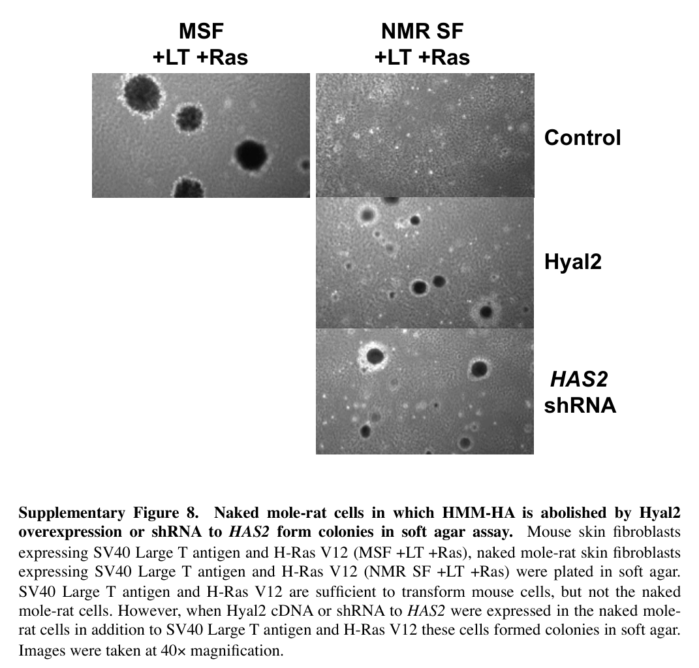

Has2 is the naked mole rat's hyaluronan synthase 2: a seven-pass integral membrane glycosyltransferase (EC 2.4.1.212, GT2/NodC-HAS family) that alternately transfers GlcNAc from UDP-N-acetyl-alpha-D-glucosamine and GlcUA from UDP-alpha-D-glucuronate onto a growing hyaluronan chain. Like other HAS enzymes it works at the inner face of the plasma membrane and extrudes the finished polysaccharide directly through the membrane into the extracellular matrix, so the enzyme is both the biosynthetic machine and the export channel; the protein is additionally found along its trafficking route through the endoplasmic reticulum membrane, Golgi, endolysosomes and extracellular vesicles. Of the three mammalian HAS isoenzymes, HAS2 is the one that makes the long polymers, and its product is the structural backbone of soft-tissue extracellular matrix, governing tissue hydration and viscoelasticity and signalling through the CD44 receptor. In mouse, Has2 is essential for embryonic cardiovascular morphogenesis (vasculogenesis, atrioventricular canal formation and the endocardial-cushion epithelial-to-mesenchymal transition), and in rat, medullary interstitial hyaluronan participates in renal water handling. The naked mole rat protein carries two substitutions of otherwise mammal-invariant asparagines to serine in the cytoplasmic catalytic loop, one of which is shared with other African mole-rats; the gene is otherwise under strong purifying selection across mammals. Naked mole rat fibroblasts express Has2 at elevated levels and secrete hyaluronan of unusually high molecular mass, and hyaluronan accumulates in the animal's tissues because slow hyaluronidase-mediated turnover compounds the elevated synthesis. Expressing the naked mole rat cDNA in human HEK293 cells is sufficient to make those cells secrete high-molecular-mass hyaluronan, and expressing the gene transgenically in mice raises tissue hyaluronan amount and mass, lowers cancer incidence and extends lifespan and healthspan. Removing the enzyme from naked mole rat cells abolishes high-molecular-mass hyaluronan and renders them transformable, making Has2 the biosynthetic origin of the species' hyaluronan-based cancer resistance. Reported absolute polymer sizes differ between laboratories (6-12 MDa versus a maximum near 2.5 MDa), but the qualitative finding that the naked mole rat product is larger than that of comparator mammals, and has unusual gelling and cytoprotective material properties, is reproduced.
Definition: The chemical reactions and pathways resulting in the formation of hyaluronan polymers of high molecular mass, conventionally taken to be greater than 1 MDa (more than roughly 2,500 disaccharide repeats). Distinguished from hyaluronan biosynthetic process generally by the length of the polymer produced, which determines the biological activity of the product: long-chain hyaluronan is anti-inflammatory and cytoprotective and represses mitogenic signalling, whereas short-chain hyaluronan is pro-inflammatory and angiogenic.
Justification: Polymer length is the biologically decisive variable in hyaluronan biology, and it is not currently expressible in GO. Verified against QuickGO: the ontology contains exactly eight hyaluronan terms (GO:0030212, GO:0030213, GO:0030214, GO:0050501, GO:0005540, GO:1900125, GO:1900126, GO:1900127); GO:0030213 has no is_a children at all, only its three regulation children; and none of the eight carries a secondaryIds entry, so no such term has been created and merged away either. The distinction is not naked-mole-rat-specific special pleading. It separates the three mammalian HAS isoenzymes from one another as a general rule - HAS1 and HAS3 make short polymers, HAS2 makes long ones - so a term at this level would let curators say what actually differs between three paralogues that currently receive identical annotations. It is also the property that carries the biological effect, which has been measured directly: cytoprotection scales with polymer length rather than with hyaluronan abundance. The naked mole rat is simply the extreme case that makes the gap conspicuous, since the entire reason this gene is studied is the length of its product, and that is the one thing its GO annotations cannot currently say. One caveat for the ontology editors. An alternative placement would be a molecular-function child of GO:0050501, since processivity is an intrinsic property of the enzyme. I propose the process term instead because GO molecular-function terms for glycosyltransferases are defined by the reaction catalysed, and the reaction is identical whatever the product length; and because the accumulation of long hyaluronan in tissue reflects the balance of synthesis and degradation, which is a process-level property. A defined molecular-mass threshold would also need agreeing, and the literature is not uniform - "high molecular mass" is variously used for greater than 1 MDa and for greater than 2 MDa, with "very-high-molecular-mass" reserved for greater than 6.1 MDa.
Parent term: hyaluronan biosynthetic process
Supporting Evidence:
| GO Term | Evidence | Action | Reason |
|---|---|---|---|
|
GO:0000139
Golgi membrane
|
IEA
GO_REF:0000044 |
KEEP AS NON CORE |
Summary: Golgi membrane localization mapped from the UniProt SubCell keyword "Golgi apparatus membrane". Real but peripheral: the Golgi is a transit compartment on the route to the plasma membrane, where catalysis actually occurs.
Reason: The UniProt SUBCELLULAR LOCATION block that generated this row is itself entirely ECO:0000250 by similarity to human Q92819, and describes the Golgi as one waypoint on a trafficking itinerary running from the endoplasmic reticulum through the Golgi to the plasma membrane and thence to endolysosomes or extracellular vesicles. There is no naked mole rat evidence bearing on it either way, and no reason to doubt it - HAS2 is a polytopic membrane protein and must traverse the secretory pathway. Retained, but the functional site is the plasma membrane, where the enzyme polymerises hyaluronan on the cytoplasmic face and extrudes it outward.
Supporting Evidence:
PMID:33846452
Three HA synthase isoforms (HAS1, HAS2, and HAS3), present in all mammals, synthesize HA at different rates, directly from the inner aspect of the plasma membrane into the extracellular matrix, and with different average sizes.
|
|
GO:0005764
lysosome
|
IEA
GO_REF:0000044 |
KEEP AS NON CORE |
Summary: Lysosomal localization mapped from the UniProt SubCell keyword. This reflects the degradative endpoint of HAS2 trafficking rather than a site of hyaluronan synthesis.
Reason: UniProt describes HAS2 as travelling from the plasma membrane back to endosomes and lysosomes, and the human ortholog is additionally turned over by autophagy; the lysosome is therefore a genuine but terminal destination, associated with removing the enzyme rather than with it doing anything. No naked mole rat data address it. Kept because it is not wrong, but it can carry no weight in a functional summary, and it should not be confused with the separate and well-supported fact that hyaluronan itself is catabolised lysosomally by other proteins. The autophagic-turnover point is taken from the human-ortholog Affinage record as a conserved-mechanism lead only (it cites PMID:32084457 for an ATG9A-dependent route); no claim is made that it has been observed in this species.
Supporting Evidence:
PMID:39009271
Naked mole-rats (NMRs) accumulate abundant high-molecular weight hyaluronan (HA) in their tissues, suggesting decreased HA degradation.
|
|
GO:0005789
endoplasmic reticulum membrane
|
IEA
GO_REF:0000044 |
KEEP AS NON CORE |
Summary: Endoplasmic reticulum membrane localization mapped from the UniProt SubCell keyword; the site of co-translational insertion of this seven-pass membrane protein and the start of its trafficking route, not a site of hyaluronan output.
Reason: The UniProt entry annotates seven transmembrane helices, so insertion into and residence in the endoplasmic reticulum membrane is a necessary consequence of the protein's topology. In the human ortholog, phosphorylation-site mutants that cannot traffic onward are retained in the endoplasmic reticulum and make no hyaluronan, which is precisely the point: residence there is compatible with the enzyme being inactive, so this is a biosynthetic waypoint and not a functional location. The Thr-110 phosphorylation result is a human-ortholog observation taken from the Affinage record as a conserved-mechanism lead (it cites PMID:30394292); no equivalent experiment has been done in the naked mole rat. Retained as non-core.
|
|
GO:0005886
plasma membrane
|
IEA
GO_REF:0000120 |
ACCEPT |
Summary: Plasma membrane localization, supported here by two independent WITH/FROM sources (UniProt SubCell SL-0039 and PANTHER ancestral node PTN000530842). This is the site where HAS2 does its work.
Reason: This is the functional location of the enzyme, not merely a compartment it visits. All three mammalian HAS isoenzymes polymerise hyaluronan at the inner face of the plasma membrane and extrude the growing chain directly through the membrane into the extracellular matrix, so the enzyme is simultaneously the synthase and the export channel. The dual grounding is notable: the SubCell keyword and the PANTHER ancestral node agree, meaning the placement is supported both by the curated human record and by the phylogenetic distribution of the family. Naked mole rat fibroblasts secrete hyaluronan into the medium, which requires a plasma-membrane-resident synthase.
Supporting Evidence:
PMID:33846452
Three HA synthase isoforms (HAS1, HAS2, and HAS3), present in all mammals, synthesize HA at different rates, directly from the inner aspect of the plasma membrane into the extracellular matrix, and with different average sizes.
PMID:23783513
naked mole-rat fibroblasts secrete extremely high-molecular-mass hyaluronan (HA), which is over five times larger than human or mouse HA
|
|
GO:0031982
vesicle
|
IEA
GO_REF:0000044 |
KEEP AS NON CORE |
Summary: Root-level vesicle term mapped from the UniProt SubCell keyword "Vesicle". Uninformative as it stands, and the informative part of the same claim is carried by the separate GO:1903561 extracellular vesicle annotation.
Reason: This is the cellular-component analogue of annotating "protein binding": it asserts only that the protein is in some vesicle, which is true of most membrane proteins. I have not replaced it with a more specific child because the UniProt note it derives from covers two genuinely different vesicle populations - intracellular transport and endosomal vesicles on the trafficking route, and extracellular vesicles into which HAS2 is exported - so any single specific replacement would over-commit. Retained as non-core; the specific, informative claim is already annotated separately as extracellular vesicle.
|
|
GO:0050501
hyaluronan synthase activity
|
IEA
GO_REF:0000120 |
ACCEPT |
Summary: The core molecular function. Automatically assigned via ARBA, an explicit RHEA:12528 / EC:2.4.1.212 reaction mapping, and the PANTHER ancestral node - and independently demonstrated for the naked mole rat protein itself by heterologous expression.
Reason: This row is unusually well grounded for an IEA. Its WITH/FROM carries a direct reaction mapping (RHEA:12528, EC:2.4.1.212) that matches the two CATALYTIC ACTIVITY reactions in the UniProt entry, so the enzymatic identity does not rest on family membership alone. More importantly, the annotation is not merely an inference in this species: expressing the cloned naked mole rat HAS2 cDNA in human HEK293 cells made those cells secrete high-molecular-mass hyaluronan, which is a direct assay of the naked mole rat gene product's activity in a heterologous host, and shRNA knockdown of HAS2 in naked mole rat fibroblasts abolished hyaluronan production. The evidence code understates the evidence: this annotation is eligible for an IDA row against PMID:23783513, which would give the flagship naked mole rat gene its first PMID-backed GO annotation.
Supporting Evidence:
PMID:23783513
Indeed, when the cDNA for the naked mole-rat HAS2 was overexpressed in human HEK293 cells, they began secreting HMW-HA
PMID:23783513
We then generated H-Ras V12 and SV40 LT expressing naked mole-rat cells, in which HMW-HA was abolished by either integrating shRNA targeting HAS2
|
|
GO:0085029
extracellular matrix assembly
|
IEA
GO_REF:0000118 |
ACCEPT |
Summary: TreeGrafter propagation from PANTHER ancestral node PTN000530842. Sound: hyaluronan is a principal structural component of soft-tissue extracellular matrix and HAS2 extrudes it straight into that compartment.
Reason: Placing extracellular matrix assembly at the ancestral hyaluronan synthase node is a defensible phylogenetic judgement - the defining activity of every characterised member of this family is to extrude a matrix polysaccharide across the plasma membrane, so the process is inseparable from the molecular function rather than being a distant downstream consequence. In the naked mole rat the claim is directly corroborated: the hyaluronan this enzyme makes accumulates in tissue extracellular matrix and forms self-assembling, spontaneously gelling structures. This is a core process for the gene, not a peripheral one.
Supporting Evidence:
PMID:23783513
Naked mole-rat skin, heart, brain and kidney were highly enriched for HA
PMID:31036852
Unlike HA that is commercially available, NMR HA readily forms robust gels without the need for chemical cross-linking.
|
|
GO:0030213
hyaluronan biosynthetic process
|
IEA
GO_REF:0000120 |
ACCEPT |
Summary: The core biological process, assigned by combined automatic methods with UniPathway UPA00341 in the WITH/FROM field, and independently demonstrated in naked mole rat cells by loss of function.
Reason: Directly entailed by the molecular function and independently supported in this species: shRNA knockdown of HAS2 in naked mole rat fibroblasts abolishes high-molecular-mass hyaluronan production, and transgenic expression of the naked mole rat gene in mice raises tissue hyaluronan amount and molecular mass. Both directions of manipulation therefore agree. Core.
Supporting Evidence:
PMID:23783513
We then generated H-Ras V12 and SV40 LT expressing naked mole-rat cells, in which HMW-HA was abolished by either integrating shRNA targeting HAS2
PMID:37612507
analysis using pulse-field gel electrophoresis showed that hyaluronan extracted from the tissues of nmrHas2 mice was more abundant and had a higher molecular mass in the muscle, heart, kidneys and small intestine
|
|
GO:0000139
Golgi membrane
|
ISS
GO_REF:0000024 |
KEEP AS NON CORE |
Summary: Curator-reviewed ISS transfer of Golgi membrane localization from human HAS2 (UniProtKB:Q92819). Duplicates the SubCell-derived IEA row and receives the same treatment.
Reason: Same claim as the GO_REF:0000044 row, arrived at by a different route; both ultimately trace to the human record. The transfer itself is unobjectionable - HAS2 is under strong purifying selection across mammals, so there is no reason to expect its trafficking itinerary to differ in the naked mole rat - but the Golgi is a compartment the enzyme passes through, not one where it functions. Non-core.
Supporting Evidence:
PMID:25948568
we found evidence of strong purifying selection acting on the HAS2 gene across all mammals, and the NMR remains unique in its particular HAS2 sequence
|
|
GO:0005764
lysosome
|
ISS
GO_REF:0000024 |
KEEP AS NON CORE |
Summary: Curator-reviewed ISS transfer of lysosomal localization from human HAS2 (UniProtKB:Q92819); the degradative endpoint of the trafficking route.
Reason: Duplicates the SubCell IEA row. Retained on the same grounds: it is a real destination in the human ortholog and there is no naked mole rat evidence against it, but it marks where the enzyme is destroyed rather than where it acts, so it cannot contribute to a functional summary.
|
|
GO:0005789
endoplasmic reticulum membrane
|
ISS
GO_REF:0000024 |
KEEP AS NON CORE |
Summary: Curator-reviewed ISS transfer of endoplasmic reticulum membrane localization from human HAS2 (UniProtKB:Q92819); the point of membrane insertion for this seven-pass protein.
Reason: Duplicates the SubCell IEA row and is retained for the same reason: an obligatory biosynthetic waypoint for a polytopic membrane protein, and in the human ortholog a compartment in which the enzyme is demonstrably held inactive when onward trafficking is blocked. Not a functional location.
|
|
GO:0005886
plasma membrane
|
ISS
GO_REF:0000024 |
ACCEPT |
Summary: Curator-reviewed ISS transfer of plasma membrane localization from human HAS2 (UniProtKB:Q92819). This is the site of catalysis and extrusion.
Reason: GOA carries this claim twice from the same donor (two separate rows dated 2022 and 2025), collapsed here into one entry. The transfer is sound and the destination is the functional one: hyaluronan synthases build the polymer on the cytoplasmic face of the plasma membrane and thread it directly outward, which is also what makes secretion by naked mole rat fibroblasts into the culture medium possible. Core location.
Supporting Evidence:
PMID:33846452
Three HA synthase isoforms (HAS1, HAS2, and HAS3), present in all mammals, synthesize HA at different rates, directly from the inner aspect of the plasma membrane into the extracellular matrix, and with different average sizes.
|
|
GO:0031982
vesicle
|
ISS
GO_REF:0000024 |
KEEP AS NON CORE |
Summary: Curator-reviewed ISS transfer of the root-level vesicle term from human HAS2 (UniProtKB:Q92819). Uninformative, and subsumed by the specific extracellular vesicle annotation from the same donor.
Reason: Duplicates the SubCell IEA row. As there, I have not proposed a specific replacement: the underlying human observation spans both intracellular trafficking vesicles and exported extracellular vesicles, so choosing one child would assert more than the source supports. Retained as an uninformative parent whose informative content is already annotated separately.
|
|
GO:0050501
hyaluronan synthase activity
|
ISS
GO_REF:0000024 |
ACCEPT |
Summary: The core molecular function, transferred by curator-reviewed ISS from all three named orthologs - human Q92819, mouse P70312 and rat O35776 (three GOA rows collapsed into this entry). Independently demonstrated on the naked mole rat protein itself.
Reason: The ortholog projection is about as safe as such projections get: the enzyme is under strong purifying selection across mammals, three separate curators independently transferred the same activity from three species, and the UniProt entry carries the matching RHEA reactions and EC number. But the annotation does not need to rest on projection at all. Expressing the cloned naked mole rat cDNA in human HEK293 cells made those cells secrete high-molecular-mass hyaluronan - a direct assay of this gene product's activity. The two Asn-to-Ser substitutions in the catalytic loop are a quantitative refinement of processivity, not a loss of activity; if anything they make the enzyme better at what the term describes. Accepted as core, with the recommendation that GOA add an IDA row against PMID:23783513 alongside the ISS transfers, since the direct assay exists and is already cited by UniProt for FUNCTION.
Supporting Evidence:
PMID:23783513
Indeed, when the cDNA for the naked mole-rat HAS2 was overexpressed in human HEK293 cells, they began secreting HMW-HA
PMID:23783513
The conserved regions carrying Asparagine to Serine substitutions correspond to the cytoplasmic loop containing the enzyme’s active site.
PMID:25948568
we found evidence of strong purifying selection acting on the HAS2 gene across all mammals, and the NMR remains unique in its particular HAS2 sequence
|
|
GO:0005794
Golgi apparatus
|
ISS
GO_REF:0000024 |
MODIFY |
Summary: Curator-reviewed ISS transfer of the whole-organelle Golgi term from human HAS2 (UniProtKB:Q92819). Less informative than the Golgi membrane annotation already present from the same donor.
Reason: HAS2 is not a Golgi lumenal or peripheral protein: the UniProt entry annotates seven transmembrane helices and describes the location as "Golgi apparatus membrane". The membrane term is therefore the accurate one, and GO:0000139 Golgi membrane is already annotated from this same donor by both ISS and SubCell IEA. This row adds only a less precise restatement, so it should be replaced by the membrane term rather than kept alongside it. This is a precision fix, not a change of biological claim, and either way the Golgi remains a transit compartment rather than a functional site.
Proposed replacements:
Golgi membrane
|
|
GO:1903561
extracellular vesicle
|
ISS
GO_REF:0000024 |
KEEP AS NON CORE |
Summary: Curator-reviewed ISS transfer from human HAS2 (UniProtKB:Q92819): HAS2 protein leaves the cell on extracellular vesicles. Plausible and specific, but with no naked mole rat data and no established functional role.
Reason: This is the informative half of the vague "vesicle" annotation, and it is a real reported property of the human ortholog. It is kept because sequence-based transfer of a trafficking route is reasonable for a protein under strong purifying selection. It is not core because nothing establishes that vesicle-borne HAS2 is catalytically productive - hyaluronan synthesis requires access to cytosolic UDP-sugars, which an exported vesicle does not obviously provide - and because no naked mole rat experiment has looked for it.
|
|
GO:0000271
polysaccharide biosynthetic process
|
ISS
GO_REF:0000024 |
MODIFY |
Summary: Curator-reviewed ISS transfer from mouse Has2 (UniProtKB:P70312). Biologically true but placed on a parallel, less informative ontology branch from the hyaluronan-specific term that is also annotated from the same donor.
Reason: Hyaluronan is literally a polysaccharide, so this is not wrong. But GO deliberately routes glycosaminoglycan biosynthesis away from generic polysaccharide biosynthesis: checked against QuickGO, GO:0000271 sits beneath GO:0016051 carbohydrate biosynthetic process and GO:0005976 polysaccharide metabolic process, whereas GO:0030213 sits beneath GO:0006024 glycosaminoglycan biosynthetic process and GO:1901137 carbohydrate derivative biosynthetic process. GO:0000271 is therefore not an ancestor of GO:0030213 and this row is not simply a redundant parent - it is a second, cross-branch statement of the same biology at lower resolution. Since GO:0030213 is already annotated from this same mouse donor, replacing rather than retaining is the right fix.
Proposed replacements:
hyaluronan biosynthetic process
|
|
GO:0085029
extracellular matrix assembly
|
ISS
GO_REF:0000024 |
ACCEPT |
Summary: Curator-reviewed ISS transfer from mouse Has2 (UniProtKB:P70312), duplicating the TreeGrafter row. A core process, corroborated in the naked mole rat.
Reason: Two independent routes - curator ISS from mouse and PANTHER ancestral-node propagation - converge on the same process, which is exactly what one expects for an activity whose product is a defining constituent of extracellular matrix. Naked mole rat tissues are enriched for this product and the polymer forms self-assembling gel-like matrix structures, so the process is realised in this species and not merely inferred.
Supporting Evidence:
PMID:23783513
Naked mole-rat skin, heart, brain and kidney were highly enriched for HA
PMID:31036852
In common with mouse HA, NMR HA forms a range of assemblies corresponding to a wide distribution of molecular weights.
|
|
GO:0001570
vasculogenesis
|
ISS
GO_REF:0000024 |
KEEP AS NON CORE |
Summary: Curator-reviewed ISS transfer from mouse Has2 (UniProtKB:P70312), grounded in mouse knockout embryology. Very likely conserved, but a pleiotropic developmental role rather than what this enzyme is for in the naked mole rat.
Reason: Retained rather than removed on two positive grounds. First, HAS2 is under strong purifying selection across all mammals, so an ancestral, embryonically essential role is very unlikely to have been lost in this lineage. Second, the naked mole rat's divergent hyaluronan phenotype is explicitly postnatal - high-molecular-mass hyaluronan begins to accumulate after birth because it is incompatible with the rapid proliferation of embryogenesis - so the embryonic behaviour of the enzyme is precisely the part that is not expected to differ. Marked non-core because it is a downstream developmental requirement of matrix hyaluronan, one of several, and does not describe the enzyme's own activity or its salient role in this species.
Supporting Evidence:
PMID:25948568
we found evidence of strong purifying selection acting on the HAS2 gene across all mammals, and the NMR remains unique in its particular HAS2 sequence
PMID:37612507
In the naked mole-rat, HMM-HA begins to accumulate postnatally
|
|
GO:0030213
hyaluronan biosynthetic process
|
ISS
GO_REF:0000024 |
ACCEPT |
Summary: The core biological process, transferred by curator-reviewed ISS from both mouse Has2 (UniProtKB:P70312) and rat Has2 (UniProtKB:O35776) - two GOA rows collapsed into this entry - and directly demonstrated in naked mole rat cells.
Reason: Two independent curators transferred this from two rodent orthologs, and in this species it is supported by manipulation in both directions: knocking HAS2 down in naked mole rat fibroblasts abolishes high-molecular-mass hyaluronan, and expressing the naked mole rat gene transgenically in mice raises hyaluronan amount and molecular mass across several tissues. Among the three HAS isoenzymes this is the one that makes the long polymers, and it is the one the naked mole rat overexpresses. Core.
Supporting Evidence:
PMID:23783513
We then generated H-Ras V12 and SV40 LT expressing naked mole-rat cells, in which HMW-HA was abolished by either integrating shRNA targeting HAS2
PMID:37612507
Has2 mainly produces HMM-HA and shows higher expression in naked mole-rats compared with in mice and humans
PMID:38052795
NMR and DMR had dramatically higher HAS2 expression.
|
|
GO:0036302
atrioventricular canal development
|
ISS
GO_REF:0000024 |
KEEP AS NON CORE |
Summary: Curator-reviewed ISS transfer from mouse Has2 (UniProtKB:P70312), grounded in mouse cardiac knockout phenotypes. Conserved developmental role, not a core function here.
Reason: Same reasoning as vasculogenesis: strong purifying selection on HAS2 across mammals argues the ancestral cardiac morphogenetic requirement is intact, and the naked mole rat's own hyaluronan divergence is postnatal, so there is no positive reason to think the embryonic role differs. No naked mole rat embryology on this gene exists, so this is retained on conservation grounds rather than on evidence, and it describes a tissue-level developmental requirement for matrix hyaluronan rather than an activity of the protein. Non-core.
Supporting Evidence:
PMID:37612507
In the naked mole-rat, HMM-HA begins to accumulate postnatally
|
|
GO:0090500
endocardial cushion to mesenchymal transition
|
ISS
GO_REF:0000024 |
KEEP AS NON CORE |
Summary: Curator-reviewed ISS transfer from mouse Has2 (UniProtKB:P70312). The most specific of the three cardiac/vascular developmental terms, and the same judgement applies.
Reason: Hyaluronan-rich cardiac jelly is required for endocardial cushion cells to lose polarity and become migratory mesenchyme, and Has2 is its source; the term is mechanistically apt for the mouse. It is retained for the naked mole rat because the gene is strongly constrained across mammals and because the species' divergence in hyaluronan is postnatal, but no naked mole rat evidence bears on it, and like the other developmental terms it is a downstream tissue-level consequence of matrix hyaluronan rather than a core function of the enzyme. Non-core.
Supporting Evidence:
PMID:25948568
we found evidence of strong purifying selection acting on the HAS2 gene across all mammals, and the NMR remains unique in its particular HAS2 sequence
|
|
GO:0035810
positive regulation of urine volume
|
ISS
GO_REF:0000024 |
MARK AS OVER ANNOTATED |
Summary: Organ-level renal physiology transferred by ISS from rat Has2 (UniProtKB:O35776). The one naked mole rat measurement that bears on it points the other way: the renal medulla is the single tissue where this species' hyaluronan content is lower, not higher, than comparators.
Reason: Sequence similarity licenses transferring what a protein does chemically; it does not license transferring an organism-level physiological outcome, which additionally depends on where the gene is expressed and on how the whole organ is tuned. The rat phenotype behind this term is a water-loading-responsive rise in medullary interstitial hyaluronan that reduces water reabsorption and permits excretion of dilute urine. In the naked mole rat, quantitative assay of cortex and medulla separately found the renal medulla to be the sole exception to this species' general hyaluronan enrichment - its medullary content is lower than in guinea pig and closer to that of desert gerbils, a lineage in which low medullary hyaluronan accompanies maximal water conservation, the opposite of increased urine volume. The animal's urine-concentrating ability is described as only moderate, and the water-loading experiment that defines the rat phenotype has never been performed in this species. That is a positive, species-specific argument that the transfer is a stretch. It is not enough for REMOVE: hyaluronan is present in the naked mole rat medulla around the vasa recta, whole-kidney staining in the original study reported hyaluronan enrichment, and transgenic expression of this gene does raise mouse kidney hyaluronan - so the underlying capability plausibly exists even if the physiological role does not transfer. Flagged as over-annotation, with the resolving experiment named in suggested_experiments.
Supporting Evidence:
PMID:33846452
HA content in the mouse and rat renal medulla is known to be much higher than in the cortex and to increase during water loading
PMID:33846452
The only exception is the renal medulla, in which HA content appeared lower in NMR than the other species.
PMID:33846452
The renal medulla average HA content we found in the NMR (150 µg/g dry weight) is closer to that of desert gerbils
PMID:33846452
The NMR has no access to free water but shows only a moderate, not very high, kidney concentrating ability
PMID:33846452
we do not know how the NMR renal medullary HA content would respond to water loading
|
|
GO:0070295
renal water absorption
|
ISS
GO_REF:0000024 |
MARK AS OVER ANNOTATED |
Summary: The companion renal term, transferred by ISS from the same rat donor (UniProtKB:O35776). Flagged on the same grounds, with the added problem that it and GO:0035810 point in opposite physiological directions.
Reason: Both rat-derived renal terms describe the same underlying axis - medullary interstitial hyaluronan modulating collecting-duct water permeability - read out in opposite directions depending on hydration state, which is why one gene carries both "positive regulation of urine volume" and "renal water absorption". Transferring that pair into a species by sequence similarity asserts not just that the protein is present but that the whole hydration-responsive regulatory loop is conserved, and that is exactly what has not been tested. The available naked mole rat data are unhelpful to the transfer: the renal medulla is the one tissue where this species' hyaluronan content falls below comparators, medullary localization around the vasa recta looks like that of mouse and guinea pig with no enrichment, and no water-loading challenge has been done. As with GO:0035810 this falls short of contradiction, so it is marked over-annotated rather than removed.
Supporting Evidence:
PMID:33846452
The role of this interstitial HA is likely to reduce water reabsorption and allow the excretion of diluted urine
PMID:33846452
In the kidney, our results show a very similar HA localization between NMR, GP, and mice tissues
PMID:33846452
The only exception is the renal medulla, in which HA content appeared lower in NMR than the other species.
PMID:33846452
we do not know how the NMR renal medullary HA content would respond to water loading
|
Q: Are the two Asn-to-Ser substitutions in the cytoplasmic catalytic loop actually causal for longer hyaluronan, or is the naked mole rat phenotype carried by elevated Has2 expression plus slow hyaluronidase-mediated turnover? The consensus review states the mechanistic link is unclear, and the only matched-expression transfection evidence that HAS2 sequence sets polymer length comes from blind mole rat, not naked mole rat, HAS2.
Q: What is the actual maximum molecular mass of naked mole rat hyaluronan? Two groups using different isolation and sizing methods report 6-12 MDa and a maximum near 2.5 MDa, and the discrepancy has been attributed to isolation procedure without being resolved.
Q: Does hyaluronan in the naked mole rat renal medulla behave as it does in rat - rising on water loading and reducing water reabsorption - or has this species, whose medullary hyaluronan content resembles that of desert gerbils, uncoupled Has2 from renal water handling?
Q: Should GO be able to express hyaluronan polymer length, and if so at process or molecular-function level? The three HAS paralogues differ chiefly in the length of what they make, and no current term captures that.
Q: Does Has2 exported on extracellular vesicles retain catalytic activity, given that hyaluronan synthesis consumes cytosolic UDP-sugars? If not, the extracellular vesicle annotation records a fate rather than a functional location.
Experiment: Express naked mole rat, mouse and human HAS2 at matched levels in the same hyaluronidase-low host cell line, together with naked mole rat constructs in which each Asn-to-Ser substitution is individually reverted, and size the secreted hyaluronan by a single method with markers extending well beyond 6 MDa. This is the experiment that would settle whether the substitutions are causal, and running all constructs in one host removes the host-cell hyaluronidase confound that the consensus review blames for the variable sizes seen previously.
Experiment: Reconstitute purified recombinant naked mole rat and mouse HAS2 into proteoliposomes with defined UDP-sugar concentrations and measure the polymer-size distribution directly. This separates intrinsic processivity from cellular context - expression level, UDP-sugar supply and degradation - which no cell-based assay can do.
Experiment: Perform a water-loading and water-restriction protocol in naked mole rats with quantitative measurement of renal medullary hyaluronan, Has2 expression in medullary interstitial cells, and urine osmolality and volume. This is the decisive test of the two rat-derived renal annotations flagged as over-annotated: if medullary hyaluronan rises on water loading as it does in rat, the transfers are vindicated; if it does not, they should be removed.
Experiment: Run a standardised cross-laboratory hyaluronan sizing exercise on aliquots of the same naked mole rat skin and fibroblast-medium samples, with each laboratory using its own extraction protocol and a shared set of size markers, to determine whether the 6-12 MDa versus 2.5 MDa discrepancy is a property of the samples or of the isolation procedure.
Experiment: Quantify hyaluronan mass and size in naked mole rat embryos and neonates, and compare with cardiac and vascular morphogenesis, to test directly whether the postnatal onset of high-molecular-mass hyaluronan means that Has2 behaves like the conserved mammalian enzyme during the developmental window in which the mouse knockout phenotypes arise.
HAS2 is a plasma membrane hyaluronan synthase whose synthesis of high-molecular-mass hyaluronan (HA) drives cell migration, epithelial-mesenchymal transition, matrix homeostasis, and developmental morphogenesis [PMID:14729574, PMID:23108409, PMID:27094859]. It assembles into functional homomeric complexes and heteromers with HAS1 and HAS3 through an N-terminal domain, with HAS1 co-expression dampening HAS2/HAS3-driven HA output PMID:25795779, and exhibits a lower UDP-GlcNAc requirement than HAS1 such that HAS2 activity scales with UDP-sugar availability PMID:23303191. Enzyme activity and trafficking are tightly controlled by post-translational modification: AMPK phosphorylation of Thr-110 is inhibitory and retains HAS2 in the ER, ubiquitination at K190 is required for HA synthesis and plasma membrane residence, and O-GlcNAcylation at Ser-221 is stimulatory, with these marks collectively governing ER-to-plasma-membrane transit [PMID:21228273, PMID:30394292]. HAS2 protein is additionally turned over by autophagy through a dynamic interaction with ATG9A PMID:32084457. The HAS2 gene is induced by TGFβ via Smad and p38 MAPK signaling PMID:23108409, by NF-κB downstream of pro-inflammatory cytokines PMID:20522558, and by transcription factors STAT3, SMAD4, ZEB1, FOXH1, and TCF7L2 [PMID:24847057, PMID:28086235, PMID:30282636, PMID:31489963, PMID:36358989], frequently acting in concert with its natural antisense transcript HAS2-AS1, which remodels chromatin at the HAS2 promoter PMID:25183006; it is repressed by AMPK and SIRT1 [PMID:21228273, PMID:31932306] and by microRNAs miR-23 and miR-26b that target the HAS2 transcript directly [PMID:21778427, PMID:26887530]. Functionally, HAS2-derived HA acts upstream of Rac1 to support lamellipodia and directed migration PMID:14729574, promotes tumor invasion by suppressing TIMP-1 and sustaining FAK/PI3K/Akt signaling PMID:22016393, drives EMT through a ZEB1-CD44 autocrine loop PMID:28086235, and is essential in vivo for skeletal growth, chondrocyte maturation, synovial joint cavitation, aggrecan retention in cartilage, and cardiac endocardial cushion formation [PMID:19633173, PMID:27094859, PMID:21778427]. Dysregulated HAS2 expression—via upstream duplication, 3'UTR shortening, or m6A-dependent mRNA stabilization—causes pathological HA accumulation linked to canine periodic fever, pulmonary hypertension, and breast cancer progression [PMID:21437276, PMID:35671866, PMID:37705505], while sustained high-molecular-mass HA production confers anti-cancer and anti-inflammatory benefits PMID:37612507.
| Year | Confidence | Finding | PMIDs | Journal |
|---|---|---|---|---|
| 1999 | Medium | HAS2 overexpression in human HT1080 cells directly increases hyaluronan production and promotes anchorage-independent growth and tumorigenicity in nude mice, demonstrating that HA production by tumor cells per se drives cell proliferation in tissues. | PMID:10070975 | Cancer Research |
| 2002 | Medium | HAS2-driven hyaluronan synthesis (rather than abundance of pericellular hyaluronan per se) controls keratinocyte migration and lamellipodia formation; HAS2-antisense cells show delayed S-phase entry, smaller lamellipodia, and increased vinculin-containing adhesion plaques. | PMID:12186949 | Journal of Cell Science |
| 2004 | High | Zebrafish Has2 is required upstream of Rac1 for lamellipodia formation and dorsal migration of lateral cells during gastrulation; epistasis analyses with constitutively active and dominant-negative Rac1 place Has2 upstream of Rac1 activation, and the effect is cell-autonomous. | PMID:14729574 | Development |
| 2004 | Medium | Vasodilatory prostaglandins (prostacyclin analogue iloprost, PGE2) upregulate HAS2 mRNA and HA synthesis in human arterial smooth muscle cells via EP2 and IP receptors and cAMP signaling; COX-2 activity is required for basal HAS2 expression; HAS2-specific siRNA knockdown abolishes iloprost-stimulated HA secretion and promotes cell spreading. | PMID:14752026 | Circulation Research |
| 2009 | High | Conditional inactivation of Has2 in limb bud mesoderm severely shortens skeletal elements, disrupts growth plate organization, reduces aggrecan deposition, decreases hypertrophic chondrocyte number, prevents secondary ossification center formation, and abolishes synovial joint cavity formation, demonstrating essential roles for HA in skeletal growth, patterning, chondrocyte maturation, and joint formation. | PMID:19633173 | Development |
| 2010 | Medium | Proinflammatory cytokines (IL-1β, TNF-α, TNF-β) induce HA synthesis and monocyte adhesion in human endothelial cells specifically through HAS2 via the NF-κB signaling pathway; HAS2-specific siRNA knockdown abolishes cytokine-induced HA synthesis and monocyte adhesion. | PMID:20522558 | Journal of Biological Chemistry |
| 2011 | High | AMPK phosphorylates Thr-110 of human HAS2, directly inhibiting its enzymatic activity and reducing HA synthesis; the other two HAS isoenzymes (HAS1 and HAS3) are not modified by AMPK. This inhibition reduces AoSMC proliferation, migration, and immune cell recruitment. | PMID:21228273 | Journal of Biological Chemistry |
| 2011 | High | HAS2 knockdown in a bone-metastatic MDA-MB-231 clone completely suppresses invasion through induction of TIMP-1 and dephosphorylation of focal adhesion kinase; HAS2 also supports EGF-mediated FAK/PI3K/Akt signaling. Rescue by HAS2 re-expression, TIMP-1 siRNA, or TIMP-1-blocking antibodies confirms the pathway. | PMID:22016393 | Journal of Biological Chemistry |
| 2011 | High | miR-23 directly targets Has2 (and Icat, Tmem2) to restrict endocardial cushion formation in zebrafish; Has2 upregulation is responsible for excessive endocardial cushion cell differentiation in dicer mutants; miR-23 also inhibits TGF-β-induced endothelial-to-mesenchymal transition in mouse endothelial cells by suppressing Has2. | PMID:21778427 | Circulation Research |
| 2011 | Medium | A novel unstable duplication upstream of HAS2 in Shar-Pei dogs increases HAS2 expression, leading to HA accumulation in skin (thick folded skin phenotype) and a periodic fever syndrome; higher copy number of the 16.1 kb duplication is associated with both increased HAS2 expression and fever syndrome. | PMID:21437276 | PLoS Genetics |
| 2012 | High | TGFβ potently stimulates HA synthesis via upregulation of HAS2 in NMuMG mammary epithelial cells through kinase-active type I TGFβ receptor, Smad signaling, and p38 MAPK activation; HAS2 knockdown inhibits TGFβ-induced EMT (~50% reduction), suppresses EMT markers (fibronectin, Snail1, Zeb1), and completely abolishes TGFβ-induced cell migration; extracellular HA or CD44 blocking are not required. | PMID:23108409 | Oncogene |
| 2013 | Medium | HAS2 requires lower cellular UDP-GlcNAc concentration than HAS1 to synthesize hyaluronan; HAS2 activity increases with UDP-sugar availability; transfected HAS2 consumes enough UDP-sugars to reduce their cellular content. These differences define distinct kinetic properties among the three HAS isoenzymes. | PMID:23303191 | Journal of Biological Chemistry |
| 2014 | Medium | O-GlcNAcylation (induced by glucosamine or PUGNAC) specifically increases HAS2 mRNA among the three HAS isoenzymes; the natural antisense transcript HAS2-AS1 is absolutely required for this O-GlcNAcylation-induced HAS2 transcription; O-GlcNAcylation recruits NF-κB subunit p65 to the HAS2-AS1 promoter, and HAS2-AS1 then regulates HAS2 transcription in cis by altering chromatin structure (O-GlcNAcylation and acetylation) around the HAS2 proximal promoter. | PMID:25183006 | Journal of Biological Chemistry |
| 2014 | High | STAT3 phosphorylated at Tyr705 (via JAK2 and ERK1/2 activation downstream of P2Y14 receptor stimulation by UDP-glucose) directly binds to the HAS2 promoter and induces HAS2 transcription in keratinocytes; chromatin immunoprecipitation confirmed increased Tyr705-STAT3 promoter binding at the time of HAS2 induction. | PMID:24847057 | Journal of Biological Chemistry |
| 2015 | High | HAS2 forms functionally relevant homomeric and heteromeric complexes with HAS1 and HAS3; complexes exist in both Golgi and plasma membrane; interaction is mediated mainly via the N-terminal 86-amino acid domain; HAS1 co-transfection reduces HAS2/HAS3-driven HA synthesis, indicating functional cooperation. HAS2 immunoprecipitates contain functional HAS2 homomers and heteromers with HAS3. | PMID:25795779 | Journal of Biological Chemistry |
| 2016 | High | CRISPR/Cas9 knockout of HAS2 in rat chondrosarcoma chondrocytes abolishes the pericellular HA matrix and completely prevents aggrecan retention; restoration of HAS2 by adenoviral transduction rescues pericellular matrix and aggrecan binding, demonstrating that HA produced by HAS2 is essential for aggrecan retention. | PMID:27094859 | Matrix Biology |
| 2018 | High | Post-translational modifications control HAS2 trafficking and activity: ubiquitination (K190R mutation) blocks HA synthesis and reduces enzyme degradation while increasing plasma membrane residence; phosphorylation site (T110A) retains HAS2 in ER, blocks PM trafficking, and abolishes HA synthesis; O-GlcNAcylation (S221A) reduces HA synthesis; S221 phosphomimetics (S221D/E) block synthesis and accelerate decay, indicating alternative regulation by O-GlcNAc versus phosphorylation. | PMID:30394292 | Matrix Biology |
| 2018 | Medium | ZEB1 directly activates HAS2 expression, and HAS2-derived HA in turn elevates ZEB1 via CD44s, forming a positive autocrine feedback loop that promotes EMT and breast cancer metastasis. | PMID:28086235 | Oncotarget |
| 2018 | Medium | TGFβ induces Has2, Has2as (antisense), and Hmga2 expression via Smad and non-Smad pathways in mouse mammary epithelial cells; Has2as abrogation suppresses TGFβ-induced EMT markers (Snai1, Hmga2, Fn1) and mesenchymal phenotype; CD44, but not Hmmr, is required for TGFβ-mediated EMT phenotype; Akt and Erk1/2 activation is required for Has2as/Has2 induction and cell motility. | PMID:30194979 | Matrix Biology |
| 2018 | Medium | Activin/Smad2 and Wnt/β-catenin signals cooperate via FOXH1 on open chromatin (following EZH2-PRC2 eviction) to activate HAS2 expression during mesendoderm differentiation of human ESCs; HAS2 knockdown greatly attenuates mesendoderm differentiation. | PMID:30282636 | Journal of Biological Chemistry |
| 2019 | Medium | HAS2 overexpression in chondrocytes inhibits MMP3, MMP13, TSG6, and other procatabolic markers and enhances aggrecan retention; however, this inhibitory effect occurs only in HAS2-transduced cells (not in adjacent non-transduced cells), indicating an intracellular mechanism independent of extracellular HA. | PMID:31270213 | Journal of Biological Chemistry |
| 2019 | Medium | SMAD4 directly binds to the HAS2 promoter to induce HAS2 expression and HA secretion in porcine granulosa cells; the downstream CD44-Caspase3 axis is activated by SMAD4 through this HAS2-HA system; miR-26b attenuates HAS2 expression via SMAD4-dependent and -independent mechanisms. | PMID:31489963 | Journal of Cellular Physiology |
| 2020 | Medium | SIRT1 activation reduces HAS2 expression and HA accumulation in aortic smooth muscle cells by preventing nuclear translocation of NF-κB (p65), which reduces HAS2-AS1 levels, and HAS2-AS1 epigenetically controls HAS2 mRNA expression; SIRT1 also reduces RHAMM and TSG6 expression to inhibit HA-mediated monocyte adhesion and cell migration. | PMID:31932306 | Journal of Biological Chemistry |
| 2020 | Medium | HAS2 is degraded in vascular endothelial cells via autophagy (evoked by nutrient deprivation, mTOR inhibition, or proteoglycan fragments endorepellin/endostatin); live-cell and super-resolution microscopy reveal dynamic interaction between HAS2 and ATG9A during autophagic degradation; inhibiting autophagic flux with chloroquine increases HAS2 levels in heart and aorta in vivo; autophagic induction suppresses HA production and inhibits angiogenic sprouting. | PMID:32084457 | Matrix Biology |
| 2022 | High | 3'UTR shortening of HAS2 (caused by depletion of NUDT21, a master regulator of alternative polyadenylation) leads to HAS2 hyper-expression in pulmonary artery smooth muscle cells, driving HA hyper-synthesis, bioenergetic dysfunction (impaired mitochondrial oxidative capacity and glycolytic shift), and pro-remodeling phenotypes; transgenic mice mimicking HAS2 hyper-synthesis in smooth muscle cells develop spontaneous pulmonary hypertension; targeted HAS2 deletion prevents experimental PH. | PMID:35671866 | Matrix Biology |
| 2023 | Medium | KIAA1429/VIRMA (a component of the m6A methyltransferase complex) binds to m6A-reader IGF2BP3, leading to stabilization of m6A-modified HAS2 mRNA in the cytosol of breast cancer cells; VIRMA knockdown inhibits breast cancer cell proliferation, migration, and invasion. | PMID:37705505 | EMBO Reports |
| 2023 | High | Transgenic mice overexpressing naked mole-rat Has2 (nmrHas2) show increased high-molecular-mass hyaluronan in several tissues, reduced spontaneous and induced cancer incidence, extended lifespan, and attenuated multi-tissue inflammation; these beneficial effects are conferred by HMM-HA and are not specific to the nmrHas2 gene sequence, as they can be recapitulated by exogenous HMM-HA. | PMID:37612507 | Nature |
| 2011 | Medium | Nephronectin acts as an upstream regulator of Bmp4-Has2 signaling in zebrafish AV canal differentiation; inhibition of has2 in npnt morphants rescues the endocardial (but not myocardial) expansion, placing Has2 downstream of Bmp4 and upstream of endocardial AV cell fate specification. | PMID:21937601 | Development |
| 2016 | Medium | miR-26b directly binds the 3'UTR of HAS2 mRNA (confirmed by luciferase reporter assay) and negatively regulates HAS2 expression and HA synthesis in porcine granulosa cells; reduced HAS2 via miR-26b promotes granulosa cell apoptosis through the HAS2-HA-CD44-Caspase3 pathway. | PMID:26887530 | Scientific Reports |
| 2018 | Medium | Extracellular ATP activates HAS2 expression in keratinocytes via P2Y2 receptor → Ca2+/calmodulin-dependent protein kinase II, PKC, MAPK, and CREB-dependent pathways; AMP and adenosine (ATP degradation products) inhibit HAS2 expression, providing a feedback mechanism to shut off HA production. | PMID:29626161 | Biochemical Journal |
| 2025 | Medium | Fibroblast-derived Has2 (deleted by fibroblast-specific Cre) limits acute heart failure following myocardial infarction in male mice; Has2-deficient male mice show exacerbated heart failure (lower cardiac output, stroke volume) at 1 week post-MI without changes in fibrosis, cardiomyocyte size, or capillary density; sex-specific effect not evident in females. | PMID:41250926 | Physiological Reports |
| 2022 | Medium | FGF9 promotes HAS2 expression in palatal mesenchyme via the Wnt/β-catenin/TCF7L2 pathway; TCF7L2 binds the HAS2 promoter and activates its transcription; Fgf9 knockout reduces TCF7L2 and HAS2, and TCF-dependent agonist-induced HA expression is blocked in Fgf9-null palate due to TCF7L2 loss. | PMID:36358989 | Biomolecules |
The research report should be a detailed narrative explaining the function, biological processes, and localization of the gene product. Citations should be given for all claims.
You should prioritize authoritative reviews and primary scientific literature when conducting research. You can supplement
this with annotations you find in gene/protein databases, but these can be outdated or inaccurate.
We are specifically interested in the primary function of the gene - for enzymes, what reaction is catalyzed, and what is the substrate specificity? For transporters, what is the substrate? For structural proteins or adapters, what is the broader structural role? For signaling molecules, what is the role in the pathway.
We are interested in where in or outside the cell the gene product carries out its function.
We are also interested in the signaling or biochemical pathways in which the gene functions. We are less interested in broad pleiotropic effects, except where these elucidate the precise role.
Include evidence where possible. We are interested in both experimental evidence as well as inference from structure, evolution, or bioinformatic analysis. Precise studies should be prioritized over high-throughput, where available.
The requested protein identity is coherent and unambiguous: G5AY81 is hyaluronan synthase 2 (HAS2), encoded by Has2 in the naked mole rat, Heterocephalus glaber. The supplied NodC/HAS and glycosyltransferase-family-2 annotations agree with the literature describing vertebrate HAS2 as a membrane-embedded, processive family-2 glycosyltransferase. No evidence was found that the literature discussed below concerns a different same-symbol gene.
Its primary molecular function is to polymerize hyaluronan (HA) from cytosolic UDP-glucuronic acid (UDP-GlcA) and UDP-N-acetylglucosamine (UDP-GlcNAc). HAS2 alternately forms β-1,3 and β-1,4 glycosidic linkages while coupling polymerization to passage of the nascent chain through the plasma membrane. The product therefore functions outside the cell, principally in the pericellular coat and extracellular matrix, although catalysis occurs on the cytoplasmic face of the membrane. This exact chemistry and topology are strongly inferred for G5AY81 from conserved vertebrate HAS2 architecture rather than from purified naked-mole-rat G5AY81 kinetic measurements. (kobayashi2020hyaluronanmetabolismand pages 3-5, caon2021cellenergymetabolism pages 1-2, maloney2022structuresubstraterecognition pages 1-3)
The strongest organism-specific evidence is genetic perturbation: Has2 knockdown lowered the viscosity of naked-mole-rat fibroblast-conditioned medium and, like HYAL2 overexpression, enabled oncogene-expressing cells to grow in soft agar. Thus, G5AY81-dependent high-molecular-mass HA is causally involved in the extracellular program that restrains transformation in this experimental system. (tian2013highmolecularmasshyaluronanmediates pages 7-9, tian2013highmolecularmasshyaluronanmediates media 719190e8, tian2013highmolecularmasshyaluronanmediates media 4f11e822)
Comparative mammalian work explicitly identifies H. glaber HAS2 as one of the membrane-embedded synthases that uses intracellular precursors and deposits HA into extracellular matrix. The supplied Glycos_transf_2-like, nucleotide-diphosugar-transferase, Chitin_synth_2 and NodC/HAS assignments are mutually consistent: HAS proteins belong to the broader processive GT2 enzyme class, whose members include cellulose- and chitin-synthase-like architectures and possess conserved acidic catalytic motifs and a QxxRW-associated membrane interface. (maloney2022structuresubstraterecognition pages 3-4, faulkes2015molecularevolutionof pages 2-3)
The domain names should not be interpreted as evidence that G5AY81 synthesizes chitin. They reflect structural and evolutionary homology. Its experimentally supported physiological product is HA.
HAS2 consumes two chemically distinct nucleotide sugars and incorporates them alternately into one linear, unsulfated polymer:
UDP-GlcA + UDP-GlcNAc + growing HA chain → elongated HA chain + UDP.
The repeating unit is composed of glucuronic acid and N-acetylglucosamine joined by alternating β-1,3 and β-1,4 bonds. HAS enzymes are unusual because one catalytic domain recognizes both donor substrates, catalyses both linkage types and coordinates polymerization with membrane translocation. There is no evidence that naked-mole-rat HAS2 has a different monosaccharide specificity. (kobayashi2020hyaluronanmetabolismand pages 3-5, caon2021cellenergymetabolism pages 1-2, maloney2022structuresubstraterecognition pages 1-3)
Structural work on a homologous type-I viral HAS—not G5AY81 itself—showed a cytosolic GT-A-fold catalytic domain, conserved acidic and QxxRW-associated elements, and a transmembrane pore. It further indicated that free GlcNAc, but not GlcA, can prime synthesis; a GlcNAc primer increased UDP-GlcA hydrolysis approximately 30-fold. These details provide a mechanistic model for vertebrate HAS2 but should remain classified as homolog-based inference until confirmed with purified G5AY81. (maloney2022structuresubstraterecognition pages 3-4, maloney2022structuresubstraterecognition pages 4-6)
Among mammalian isoforms, HAS2 generally produces particularly large HA: transfected mammalian cells can secrete average products above 2 MDa, whereas HAS1/HAS3 products span broadly lower ranges. Product size is not an immutable enzyme-only property; expression level, UDP-sugar supply, membrane residence, post-translational regulation and extracellular degradation all contribute. (marmol2021abundanceandsize pages 1-2)
The naked-mole-rat sequence was reported to contain two unusual conserved-site substitutions in which asparagines are replaced by serines, proposed to favour very large products. However, later transgenic work found that mouse HAS2 gave similar protective effects in vitro and concluded that increased HMW-HA production—not necessarily the naked-mole-rat sequence itself—was critical. The safest annotation is therefore that G5AY81 is a high-molecular-mass HA synthase whose in-vivo phenotype reflects both synthesis and unusually slow HA turnover; unique substitutions remain plausible modifiers rather than definitively proven determinants. (marmol2021abundanceandsize pages 2-4, zhang2023increasedhyaluronanby pages 1-5)
HAS2 is an integral plasma-membrane enzyme. Its hydrophilic catalytic region faces the cytoplasm, where UDP-GlcA and UDP-GlcNAc are available; transmembrane helices form or support an export channel. HA is synthesized directly from the inner membrane aspect and extruded into the extracellular space without conventional Golgi-mediated glycosaminoglycan assembly. (kobayashi2020hyaluronanmetabolismand pages 3-5, caon2021cellenergymetabolism pages 1-2, maloney2022structuresubstraterecognition pages 1-3, marmol2021abundanceandsize pages 1-2)
Accordingly, G5AY81 has three spatially linked roles:
In naked-mole-rat tissues, HA was localized primarily in extracellular connective compartments: throughout dermis, around muscle fibres and bundles, in renal basal-lamina/medullary regions, around vessels, and in lymph-node capsule, trabeculae and sinuses. Its distribution was broadly similar to mouse and guinea pig, suggesting that the unusual feature is more abundance, size and turnover than an entirely novel tissue compartment. (marmol2021abundanceandsize pages 2-4)
HA is a highly hydrated, negatively charged glycosaminoglycan. HAS2 therefore contributes directly to pericellular-coat formation, tissue hydration, viscoelasticity, cell spacing and matrix organization. One evolutionary interpretation is that abundant HMW-HA enhanced the loose, elastic skin advantageous in narrow subterranean tunnels; cancer protection may have arisen as a secondary benefit. Comparative evidence published in December 2023 associated abundant HMW-HA and altered HA-metabolism genes with subterranean mammals, supporting—but not proving—this adaptive model. (zhao2023evolutionofhighmolecularmass pages 1-2, faulkes2015molecularevolutionof pages 2-3)
Extracellular HA signals through receptors including CD44. In naked-mole-rat fibroblasts, blocking CD44 made adult cells susceptible to soft-agar transformation by SV40 large T antigen plus oncogenic Ras. HA removal also altered NF2 phosphorylation and p16INK4a-associated early-contact-inhibition readouts. These experiments place HAS2 upstream of an HA–CD44/contact-inhibition tumour-suppressive axis, although receptor output depends strongly on polymer length and cellular context. (tian2013highmolecularmasshyaluronanmediates pages 1-7)
More generally, HA–CD44 can couple to receptor-tyrosine-kinase, PI3K–AKT, Ras–MAPK, Rac/Rho and cytoskeletal pathways. These canonical outputs should not automatically be interpreted as activated by G5AY81 in every naked-mole-rat tissue; HMW and fragmented HA can produce different or opposing responses. (kobayashi2020hyaluronanmetabolismand pages 3-5)
Purified naked-mole-rat very-high-molecular-mass HA (>6.1 MDa in the 2020 study) protected naked-mole-rat, mouse and human cells from stress-induced death and cell-cycle arrest in a polymer-length-dependent, CD44-dependent fashion. It suppressed selected CD44 protein interactions and partly attenuated p53-associated responses. This links the G5AY81 product—not necessarily direct HAS2 protein signalling—to cytoprotection and stress resilience. (takasugi2020nakedmoleratveryhighmolecularmass pages 1-2)
HA synthesis consumes substantial cytosolic UDP-sugar pools and couples extracellular-matrix production to glucose and hexosamine metabolism. In mammalian HAS2, O-GlcNAcylation stabilizes the enzyme at the membrane and increases HA output, whereas AMPK-mediated phosphorylation inhibits secretion; SIRT1 can reduce HAS2 expression and pericellular HA deposition. These are authoritative mammalian mechanisms and useful predictions for G5AY81, but direct confirmation in H. glaber remains limited. (kobayashi2020hyaluronanmetabolismand pages 3-5, caon2021cellenergymetabolism pages 1-2)
The 2023 transgenic-mouse study linked naked-mole-rat Has2 expression to lower inflammatory pathway activity and circulating pro-inflammatory cytokines, alternative macrophage activation, improved intestinal barrier features and preservation of aged intestinal-stem-cell organoid formation. HMW-HA rescued declining organoid formation when added to old wild-type cultures, and proposed receptor routes included CD44 and TLR4. These are cross-species gain-of-function findings, not proof that every pathway operates identically in native naked mole rats. (zhang2023increasedhyaluronanby pages 5-8, zhang2023increasedhyaluronanby pages 1-5)
The pivotal 2013 experiments found that adult naked-mole-rat fibroblasts resisted transformation by large T antigen plus oncogenic Ras. Has2 shRNA strongly reduced Has2 expression and conditioned-medium viscosity; HYAL2 overexpression had a comparable effect. Either perturbation enabled soft-agar colony formation. CD44 blockade also enabled transformation. Together, these loss-of-function, degradation and receptor-blockade experiments form a coherent causal chain: HAS2 → HMW-HA-rich matrix → CD44-associated growth restraint. (tian2013highmolecularmasshyaluronanmediates pages 1-7, tian2013highmolecularmasshyaluronanmediates pages 7-9, tian2013highmolecularmasshyaluronanmediates media 719190e8, tian2013highmolecularmasshyaluronanmediates media 4f11e822)
HA degradation also affected established growth control: after fibroblasts had been cultured with hyaluronidase for 12 days, removing the enzyme decreased cell number and increased apoptosis, with reported P values of 0.01 and 0.005, respectively. (tian2013highmolecularmasshyaluronanmediates pages 1-7)
| topic | best-supported conclusion | evidence type/directness | key quantitative observation | caveat |
|---|---|---|---|---|
| Identity / domain (G5AY81) | G5AY81 is consistent with naked-mole-rat Has2, encoding hyaluronan synthase 2, a membrane-embedded processive glycosyltransferase of the HAS/GT2 lineage; this agrees with the supplied UniProt family/domain assignment. (faulkes2015molecularevolutionof pages 2-3) | Comparative sequence/evolution evidence; indirect for UniProt accession, direct for Heterocephalus glaber HAS2 gene identity | Cv-HAS, a validated HAS homolog, shares ~45% sequence similarity with human HAS2 and conserves the GT domain/TM architecture used to interpret vertebrate HAS proteins. (maloney2022structuresubstraterecognition pages 1-3) | Primary papers cited here do not directly mention UniProt G5AY81; accession-level mapping remains database-based. |
| Catalytic function / localization | By strong orthology and structural inference, HAS2 synthesizes hyaluronan from UDP-GlcNAc and UDP-GlcA at the plasma membrane and extrudes the growing polymer through a transmembrane channel into the extracellular matrix. (kobayashi2020hyaluronanmetabolismand pages 3-5, caon2021cellenergymetabolism pages 1-2, maloney2022structuresubstraterecognition pages 1-3, maloney2022structuresubstraterecognition pages 3-4, maloney2022structuresubstraterecognition pages 4-6) | Structural/biochemical inference from HAS homologs and mammalian reviews; indirect for naked-mole-rat HAS2 specifically | HA is built from alternating β-1,3 and β-1,4 linkages; only GlcNAc primed synthesis in the structural study, and a continuous TM channel sufficient for ~5 disaccharides was resolved in the primed state. (kobayashi2020hyaluronanmetabolismand pages 3-5, maloney2022structuresubstraterecognition pages 1-3, maloney2022structuresubstraterecognition pages 4-6) | No naked-mole-rat HAS2-specific kinetic constants or solved structure were available in the retrieved evidence. |
| 2013 HAS2 knockdown / HYAL2 overexpression | In naked-mole-rat skin fibroblasts, reducing HA by Has2 shRNA or HYAL2 overexpression abolishes the transformation-resistant phenotype, strongly supporting HAS2-dependent HMM-HA as functionally important. (tian2013highmolecularmasshyaluronanmediates pages 7-9, tian2013highmolecularmasshyaluronanmediates media 719190e8, tian2013highmolecularmasshyaluronanmediates media 4f11e822) | Direct organism-specific perturbation evidence | HAase withdrawal after 12 days reduced cell number with apoptosis increase (P=0.01 and P=0.005, respectively); adult NMR fibroblasts resisted soft-agar growth unless HMM-HA was disrupted, whereas embryonic NMR fibroblasts lacking ECI transformed more readily. (tian2013highmolecularmasshyaluronanmediates pages 1-7, tian2013highmolecularmasshyaluronanmediates pages 7-9) | The supplementary excerpts shown here do not report exact knockdown percentage or colony counts. |
| 2020 cytoprotection | Very-high-molecular-mass NMR HA has superior cytoprotective activity, acting through CD44 and modulating p53-associated responses; this supports a biologically consequential HAS2 product phenotype. (takasugi2020nakedmoleratveryhighmolecularmass pages 1-2) | Direct functional evidence on NMR HA product; indirect for HAS2 enzyme per se | vHMM-HA was reported as >6.1 MDa and protected NMR, mouse, and human cells from stress-induced cell-cycle arrest and cell death in a polymer-length-dependent manner. (takasugi2020nakedmoleratveryhighmolecularmass pages 1-2) | The study interrogates purified/secreted HA and receptor signaling, not enzyme localization or catalytic kinetics. |
| 2021 conflicting polymer-size measurements | A later quantitative study confirmed that NMR tissues generally contain more and larger HA than controls, but did not detect the previously claimed ultra-HMW tissue HA; instead, maximum HA size was around 2.5 MDa in serum and most tissues tested. (marmol2021abundanceandsize pages 1-2, marmol2021abundanceandsize pages 2-4, marmol2021abundanceandsize pages 13-15) | Direct organism-specific tissue measurements | Reported serum HA in NMR averaged about 260 ng/ml, with individual values ranging from 44 to 650 ng/ml; tissue HA size peaked near 2.5 MDa. (marmol2021abundanceandsize pages 13-15) | This conflicts with earlier 6–12 MDa reports and may reflect methodological differences, tissue source, or sample handling rather than complete biological disagreement. |
| 2023 transgenic mouse healthspan | Transgenic expression of naked-mole-rat Has2 in mice increased HMW-HA and improved healthspan, with modest but significant lifespan extension and cancer resistance, implying that elevated HAS2-driven HA can transfer some protective phenotypes across species. (zhang2023increasedhyaluronanby pages 1-5, zhang2023increasedhyaluronanby pages 5-8) | Direct in vivo transgenic evidence, but in mouse rather than naked mole-rat | Authors report extended median and maximum lifespan, lower frailty, lower inflammatory cytokines, preserved intestinal organoid formation with age, and HMW-HA accumulation in multiple organs. (zhang2023increasedhyaluronanby pages 5-8, zhang2023increasedhyaluronanby pages 1-5) | The supplementary text emphasizes that the naked-mole-rat sequence per se may not be essential; increased HMW-HA production, not necessarily a unique catalytic mutation, may be the main driver. |
| 2023 subterranean evolution | Elevated HMM-HA and altered HA-metabolism genes, including HAS2, are associated with subterranean mammals, supporting the view that NMR HAS2 participates in an adaptive extracellular-matrix program linked to underground lifestyle. (zhao2023evolutionofhighmolecularmass pages 1-2, faulkes2015molecularevolutionof pages 2-3) | Comparative evolutionary and expression evidence; partially direct for NMR | The 2023 study reports higher NMR HAS2 expression than control species and notes that HAS2 is the synthase associated with longer HA polymers relative to HAS1/HAS3. (zhao2023evolutionofhighmolecularmass pages 1-2) | Association with subterranean adaptation does not by itself prove which specific HAS2 substitutions are causative in naked mole-rat. |
Table: This table summarizes the strongest available evidence for naked-mole-rat Has2/G5AY81, separating direct organism-specific experiments from broader structural or comparative inference. It is useful for judging which conclusions are well established, which are transferable from ortholog studies, and where key uncertainties remain.
The original report described naked-mole-rat fibroblast/tissue HA in the 6–12 MDa range. A 2020 functional study likewise defined the tested very-high-molecular-mass fraction as >6.1 MDa and found superior cytoprotection. (marmol2021abundanceandsize pages 2-4, takasugi2020nakedmoleratveryhighmolecularmass pages 1-2)
However, a 2021 systematic study using HA-binding-protein histochemistry, an ELISA-like assay, size-exclusion chromatography and agarose electrophoresis did not detect tissue HA ≥4 MDa. Its highest tissue values were near 2.5 MDa, especially in skin and lymph nodes. Naked-mole-rat serum averaged about 260 ng/mL, but varied from 44 to 650 ng/mL among eight animals. HA was still generally more abundant and larger than in guinea pig controls, and HYAL1 expression/activity was lower than in mouse lymph nodes. (marmol2021abundanceandsize pages 1-2, marmol2021abundanceandsize pages 13-15)
This discrepancy is scientifically consequential. The 2021 authors showed that Alcian blue staining used in early work was largely not HA-specific and cautioned that extraction, analytical platform, tissue versus cultured-cell sampling and degradation can affect measured distributions. Thus, “naked-mole-rat HAS2 produces unusually high-molecular-mass HA” is well supported, whereas “native tissues universally contain 6–12 MDa HA” is not settled. (marmol2021abundanceandsize pages 1-2, marmol2021abundanceandsize pages 2-4)
Transgenic mice expressing naked-mole-rat Has2 accumulated HMW-HA in several organs, resisted spontaneous and chemically induced cancers, and showed significantly extended median and maximum lifespan, lower frailty, better physical performance and younger molecular signatures. The reported lifespan effect was modest relative to the healthspan improvement. Native naked mole rats combine robust synthesis with slow degradation, whereas the mice modified only synthesis and retained high hyaluronidase activity, probably limiting HA accumulation. (zhang2023increasedhyaluronanby pages 1-5)
The authors’ mechanistic interpretation is especially important for functional annotation: because mouse HAS2 produced similar in-vitro protection, they did not regard the naked-mole-rat amino-acid sequence itself as indispensable. Increased sustained production of HMW-HA may be more important than a uniquely altered substrate specificity. (zhang2023increasedhyaluronanby pages 1-5)
A broad comparison found abundant HMW-HA in multiple subterranean mammals but not related above-ground species. Differences involved both synthetic and degradative genes, with higher naked-mole-rat HAS2 expression and distinct HA-metabolism variants. This supports a systems-level model: G5AY81 acts within an evolved HA metabolic network rather than alone. (zhao2023evolutionofhighmolecularmass pages 1-2)
An attenuated replication-competent herpes simplex virus was engineered to express naked-mole-rat HAS2 in glioma cells as an extracellular-matrix-modifying oncolytic platform. This remains preclinical and primarily establishes vector feasibility; it is not evidence of clinical efficacy. DOI: https://doi.org/10.3390/microorganisms11112657 (published October 2023).
A 2024 review focused specifically on naked-mole-rat HA (DOI: https://doi.org/10.1016/j.biochi.2023.12.008; published May 2024), while a September 2024 study reported deficient physiological HA-degrading activity of naked-mole-rat TMEM2 (DOI: https://doi.org/10.1016/j.abb.2024.110098). The latter reinforces the interpretation that exceptional HA biology reflects reduced catabolism as well as HAS2-mediated synthesis; it does not change G5AY81’s catalytic annotation.
High-confidence annotation: G5AY81 is a plasma-membrane, processive HA synthase using UDP-GlcA and UDP-GlcNAc; it extrudes HA into the extracellular/pericellular matrix. Its principal role is synthesis of large HA polymers, thereby altering matrix mechanics and HA-receptor signalling.
Strong organism-specific conclusion: Reducing Has2-derived HA compromises naked-mole-rat fibroblast transformation resistance under the tested oncogenic conditions. (tian2013highmolecularmasshyaluronanmediates pages 7-9, tian2013highmolecularmasshyaluronanmediates media 719190e8)
Moderate-confidence interpretation: High HAS2 activity, together with low degradation, contributes to abundant large HA and downstream contact inhibition, anti-inflammatory and stress-protective phenotypes.
Unresolved issues: No G5AY81-specific high-resolution structure or comprehensive kinetic constants were identified; causality of the two reported amino-acid substitutions remains uncertain; tissue HA’s upper molecular mass is disputed; and native whole-animal knockout evidence in H. glaber is lacking. The literature therefore supports precise enzymatic annotation more strongly than it supports any single explanation of naked-mole-rat longevity or cancer resistance.
References
(kobayashi2020hyaluronanmetabolismand pages 3-5): Takashi Kobayashi, Theerawut Chanmee, and Naoki Itano. Hyaluronan: metabolism and function. Nov 2020. URL: https://doi.org/10.3390/biom10111525, doi:10.3390/biom10111525. This article has 398 citations.
(caon2021cellenergymetabolism pages 1-2): Ilaria Caon, Arianna Parnigoni, Manuela Viola, Evgenia Karousou, Alberto Passi, and Davide Vigetti. Cell energy metabolism and hyaluronan synthesis. Journal of Histochemistry & Cytochemistry, 69:35-47, Jul 2021. URL: https://doi.org/10.1369/0022155420929772, doi:10.1369/0022155420929772. This article has 126 citations and is from a peer-reviewed journal.
(maloney2022structuresubstraterecognition pages 1-3): Finn P. Maloney, Jeremi Kuklewicz, Robin A. Corey, Yunchen Bi, Ruoya Ho, Lukasz Mateusiak, Els Pardon, Jan Steyaert, Phillip J. Stansfeld, and Jochen Zimmer. Structure, substrate recognition and initiation of hyaluronan synthase. Nature, 604:195-201, Mar 2022. URL: https://doi.org/10.1038/s41586-022-04534-2, doi:10.1038/s41586-022-04534-2. This article has 168 citations and is from a highest quality peer-reviewed journal.
(tian2013highmolecularmasshyaluronanmediates pages 7-9): Xiao Tian, Jorge Azpurua, Christopher Hine, Amita Vaidya, Max Myakishev-Rempel, Julia Ablaeva, Zhiyong Mao, Eviatar Nevo, Vera Gorbunova, and Andrei Seluanov. High-molecular-mass hyaluronan mediates the cancer resistance of the naked mole rat. Jun 2013. URL: https://doi.org/10.1038/nature12234, doi:10.1038/nature12234. This article has 1043 citations and is from a highest quality peer-reviewed journal.
(tian2013highmolecularmasshyaluronanmediates media 719190e8): Xiao Tian, Jorge Azpurua, Christopher Hine, Amita Vaidya, Max Myakishev-Rempel, Julia Ablaeva, Zhiyong Mao, Eviatar Nevo, Vera Gorbunova, and Andrei Seluanov. High-molecular-mass hyaluronan mediates the cancer resistance of the naked mole rat. Jun 2013. URL: https://doi.org/10.1038/nature12234, doi:10.1038/nature12234. This article has 1043 citations and is from a highest quality peer-reviewed journal.
(tian2013highmolecularmasshyaluronanmediates media 4f11e822): Xiao Tian, Jorge Azpurua, Christopher Hine, Amita Vaidya, Max Myakishev-Rempel, Julia Ablaeva, Zhiyong Mao, Eviatar Nevo, Vera Gorbunova, and Andrei Seluanov. High-molecular-mass hyaluronan mediates the cancer resistance of the naked mole rat. Jun 2013. URL: https://doi.org/10.1038/nature12234, doi:10.1038/nature12234. This article has 1043 citations and is from a highest quality peer-reviewed journal.
(maloney2022structuresubstraterecognition pages 3-4): Finn P. Maloney, Jeremi Kuklewicz, Robin A. Corey, Yunchen Bi, Ruoya Ho, Lukasz Mateusiak, Els Pardon, Jan Steyaert, Phillip J. Stansfeld, and Jochen Zimmer. Structure, substrate recognition and initiation of hyaluronan synthase. Nature, 604:195-201, Mar 2022. URL: https://doi.org/10.1038/s41586-022-04534-2, doi:10.1038/s41586-022-04534-2. This article has 168 citations and is from a highest quality peer-reviewed journal.
(faulkes2015molecularevolutionof pages 2-3): Christopher G. Faulkes, Kalina T. J. Davies, Stephen J. Rossiter, and Nigel C. Bennett. Molecular evolution of the hyaluronan synthase 2 gene in mammals: implications for adaptations to the subterranean niche and cancer resistance. Biology Letters, 11:20150185, May 2015. URL: https://doi.org/10.1098/rsbl.2015.0185, doi:10.1098/rsbl.2015.0185. This article has 45 citations and is from a domain leading peer-reviewed journal.
(maloney2022structuresubstraterecognition pages 4-6): Finn P. Maloney, Jeremi Kuklewicz, Robin A. Corey, Yunchen Bi, Ruoya Ho, Lukasz Mateusiak, Els Pardon, Jan Steyaert, Phillip J. Stansfeld, and Jochen Zimmer. Structure, substrate recognition and initiation of hyaluronan synthase. Nature, 604:195-201, Mar 2022. URL: https://doi.org/10.1038/s41586-022-04534-2, doi:10.1038/s41586-022-04534-2. This article has 168 citations and is from a highest quality peer-reviewed journal.
(marmol2021abundanceandsize pages 1-2): Delphine del Marmol, Susanne Holtze, Nadia Kichler, Arne Sahm, Benoit Bihin, Virginie Bourguignon, Sophie Dogné, Karol Szafranski, Thomas Bernd Hildebrandt, and Bruno Flamion. Abundance and size of hyaluronan in naked mole-rat tissues and plasma. Scientific Reports, Apr 2021. URL: https://doi.org/10.1038/s41598-021-86967-9, doi:10.1038/s41598-021-86967-9. This article has 39 citations and is from a peer-reviewed journal.
(marmol2021abundanceandsize pages 2-4): Delphine del Marmol, Susanne Holtze, Nadia Kichler, Arne Sahm, Benoit Bihin, Virginie Bourguignon, Sophie Dogné, Karol Szafranski, Thomas Bernd Hildebrandt, and Bruno Flamion. Abundance and size of hyaluronan in naked mole-rat tissues and plasma. Scientific Reports, Apr 2021. URL: https://doi.org/10.1038/s41598-021-86967-9, doi:10.1038/s41598-021-86967-9. This article has 39 citations and is from a peer-reviewed journal.
(zhang2023increasedhyaluronanby pages 1-5): Zhihui Zhang, Xiao Tian, J. Yuyang Lu, Kathryn Boit, Julia Ablaeva, Frances Tolibzoda Zakusilo, Stephan Emmrich, Denis Firsanov, Elena Rydkina, Seyed Ali Biashad, Quan Lu, Alexander Tyshkovskiy, Vadim N. Gladyshev, Steve Horvath, Andrei Seluanov, and Vera Gorbunova. Increased hyaluronan by naked mole-rat has2 improves healthspan in mice. Nature, 621:196-205, Aug 2023. URL: https://doi.org/10.1038/s41586-023-06463-0, doi:10.1038/s41586-023-06463-0. This article has 153 citations and is from a highest quality peer-reviewed journal.
(zhao2023evolutionofhighmolecularmass pages 1-2): Yang Zhao, Zhizhong Zheng, Zhihui Zhang, Yandong Xu, Eric Hillpot, Yifei S. Lin, Frances T. Zakusilo, J. Yuyang Lu, Julia Ablaeva, Seyed Ali Biashad, Richard A. Miller, Eviatar Nevo, Andrei Seluanov, and Vera Gorbunova. Evolution of high-molecular-mass hyaluronic acid is associated with subterranean lifestyle. Nature Communications, Dec 2023. URL: https://doi.org/10.1038/s41467-023-43623-2, doi:10.1038/s41467-023-43623-2. This article has 34 citations and is from a highest quality peer-reviewed journal.
(tian2013highmolecularmasshyaluronanmediates pages 1-7): Xiao Tian, Jorge Azpurua, Christopher Hine, Amita Vaidya, Max Myakishev-Rempel, Julia Ablaeva, Zhiyong Mao, Eviatar Nevo, Vera Gorbunova, and Andrei Seluanov. High-molecular-mass hyaluronan mediates the cancer resistance of the naked mole rat. Jun 2013. URL: https://doi.org/10.1038/nature12234, doi:10.1038/nature12234. This article has 1043 citations and is from a highest quality peer-reviewed journal.
(takasugi2020nakedmoleratveryhighmolecularmass pages 1-2): Masaki Takasugi, Denis Firsanov, Gregory Tombline, Hanbing Ning, Julia Ablaeva, Andrei Seluanov, and Vera Gorbunova. Naked mole-rat very-high-molecular-mass hyaluronan exhibits superior cytoprotective properties. Nature Communications, May 2020. URL: https://doi.org/10.1038/s41467-020-16050-w, doi:10.1038/s41467-020-16050-w. This article has 129 citations and is from a highest quality peer-reviewed journal.
(zhang2023increasedhyaluronanby pages 5-8): Zhihui Zhang, Xiao Tian, J. Yuyang Lu, Kathryn Boit, Julia Ablaeva, Frances Tolibzoda Zakusilo, Stephan Emmrich, Denis Firsanov, Elena Rydkina, Seyed Ali Biashad, Quan Lu, Alexander Tyshkovskiy, Vadim N. Gladyshev, Steve Horvath, Andrei Seluanov, and Vera Gorbunova. Increased hyaluronan by naked mole-rat has2 improves healthspan in mice. Nature, 621:196-205, Aug 2023. URL: https://doi.org/10.1038/s41586-023-06463-0, doi:10.1038/s41586-023-06463-0. This article has 153 citations and is from a highest quality peer-reviewed journal.
(marmol2021abundanceandsize pages 13-15): Delphine del Marmol, Susanne Holtze, Nadia Kichler, Arne Sahm, Benoit Bihin, Virginie Bourguignon, Sophie Dogné, Karol Szafranski, Thomas Bernd Hildebrandt, and Bruno Flamion. Abundance and size of hyaluronan in naked mole-rat tissues and plasma. Scientific Reports, Apr 2021. URL: https://doi.org/10.1038/s41598-021-86967-9, doi:10.1038/s41598-021-86967-9. This article has 39 citations and is from a peer-reviewed journal.

UniProt G5AY81 (HYAS2_HETGA), Swiss-Prot reviewed, 552 aa, NCBI taxon 10181.
GOA: 28 rows collapsing to 24 unique (term, evidence, reference) entries. Every row is
electronic: ISS (GO_REF:0000024, from human Q92819, mouse P70312, rat O35776) or IEA
(GO_REF:0000044 SubCell, GO_REF:0000118 TreeGrafter, GO_REF:0000120 combined). There are
no experimental GO annotations on this protein.
The single most important fact for this review is that GOA's evidence codes understate
what is known. Tian et al. cloned the NMR HAS2 cDNA and expressed it heterologously:
Methods confirm this is a direct assay of the product of the NMR coding sequence in a
heterologous host:
That is IDA-grade evidence for GO:0050501 hyaluronan synthase activity on G5AY81, not
an ortholog projection. Independently, loss of function in NMR cells abolishes the product:
which is IMP-grade evidence for GO:0030213 hyaluronan biosynthetic process. The
functional consequence:
The gain-of-function complement was later done in a whole animal — a transgenic mouse
carrying the NMR gene:
So the core MF and BP are supported by NMR-specific gain-of-function (heterologous cells
and transgenic mice) and loss-of-function (shRNA in NMR fibroblasts). This is unusually
strong for a species with essentially no experimental GOA coverage.
Comparative work refines this: one of the two is not NMR-private, and the gene is otherwise
strongly constrained across mammals:
The purifying-selection result matters for curation: it is a positive argument that the
conserved, ancestral functions of HAS2 (catalysis, ECM output, the developmental roles) are
retained in the NMR, and that the NMR difference is a refinement on top, not a
replacement.
The HA phenotype is a two-sided balance — synthesis up, catabolism down. The catabolic side
is not Has2's doing:
HAS isoenzymes differ systematically in the length of the polymer they extrude, and HAS2 is
the long-polymer synthase. This is generic mammalian biology, not an NMR peculiarity:
The original NMR claim:
This magnitude is genuinely contested. Del Marmol et al. re-measured by size-exclusion
chromatography and gel electrophoresis and could not reproduce it:
The consensus "myths" review adjudicates in favour of the qualitative claim while
rejecting the quantitative one:
It also flags that the mechanistic link from the two substitutions to processivity is not
established:
Direct evidence that HAS2 sequence (not just expression level) sets polymer length does
exist in a sister subterranean species:
Why length matters biologically (and therefore why it deserves an ontology term):
Curation stance taken: I describe the NMR product as unusually long / very-high-molecular-
mass and cite both the 6–12 MDa and the ≤2.5 MDa measurements, rather than asserting either
number as settled. The GO annotations at stake (GO:0050501, GO:0030213) do not depend on the
magnitude, only on the qualitative fact that HAS2 makes HA, which is not in dispute.
These support GO:0085029 extracellular matrix assembly as a real, direct downstream process
for HAS2 output, but they are properties of the polymer, not of the enzyme, so they
inform the BP annotation rather than adding new MF claims.
GO:0035810 positive regulation of urine volume and GO:0070295 renal water absorption are
ISS transfers from rat Has2 (UniProtKB:O35776). Both are organ-level renal-physiology
terms. The rat basis is medullary interstitial HA:
Del Marmol et al. quantified HA in NMR kidney cortex and medulla separately, and the renal
medulla is the single tissue where the NMR runs against the species trend:
and, importantly, the authors say the actual physiological test has never been done in NMR:
There is a countervailing observation from the original paper, based on whole-kidney alcian
blue rather than quantitative cortex/medulla assay:
and the transgenic mouse does raise kidney HA when the NMR gene is expressed
PMID:37612507, but that is a mouse kidney driven by a CAG promoter, not NMR renal
physiology.
Conclusion: the rat organ-physiology terms are transferred on sequence similarity alone,
into a species whose renal medullary HA is the one measurement that does not follow the NMR
pattern and whose urine-concentrating physiology is explicitly described as unremarkable. This
is not enough to call the function contradicted — HA is present in the NMR medulla around the
vasa recta PMID:33846452 —
but it is enough to call the transfer an over-annotation. Both get
MARK_AS_OVER_ANNOTATED, not REMOVE, with the resolving experiment named (a water-loading
protocol with medullary HA quantification and urine osmolality).
GO:0001570 vasculogenesis, GO:0036302 atrioventricular canal development, and
GO:0090500 endocardial cushion to mesenchymal transition come by ISS from mouse Has2
(UniProtKB:P70312), grounded in mouse Has2 knockouts. There is no NMR-specific evidence
for or against them. Two things argue for retaining rather than deleting:
But they are developmental processes of a pleiotropic ECM enzyme, not what HAS2 is for in
the NMR, so they are KEEP_AS_NON_CORE.
HAS enzymes are polytopic plasma-membrane proteins that polymerise HA on the cytoplasmic face
and extrude it directly outward:
So GO:0005886 plasma membrane is the functional site (ACCEPT, core). The remaining CC terms
(GO:0005789 ER membrane, GO:0000139 Golgi membrane, GO:0005794 Golgi apparatus,
GO:0005764 lysosome, GO:0031982 vesicle, GO:1903561 extracellular vesicle) are all
trafficking-itinerary compartments taken from the human SubCell record; UniProt itself
describes them as a route ("Travels from endoplasmic reticulum (ER), Golgi to plasma membrane
and either back to endosomes and lysosomes, or out into extracellular vesicles"). None has
NMR-specific support. They are kept as non-core, with two term-level fixes:
GO:0005794 Golgi apparatus → MODIFY to GO:0000139 Golgi membrane: HAS2 is a seven-passGO:0000271 polysaccharide biosynthetic process → MODIFY to GO:0030213 hyaluronan
biosynthetic process. Verified against QuickGO: GO:0000271 sits underRe-verified independently (QuickGO /ontology/go/terms/<id>/complete plus a text search of
the whole ontology). GO contains exactly eight hyaluronan terms:
| GO id | name |
|---|---|
| GO:0030212 | hyaluronan metabolic process |
| GO:0030213 | hyaluronan biosynthetic process |
| GO:0030214 | hyaluronan catabolic process |
| GO:0050501 | hyaluronan synthase activity |
| GO:0005540 | hyaluronic acid binding |
| GO:1900125 | regulation of hyaluronan biosynthetic process |
| GO:1900126 | negative regulation of hyaluronan biosynthetic process |
| GO:1900127 | positive regulation of hyaluronan biosynthetic process |
GO:0030213 has no is_a children at all (only the three regulates children above),
and none of the eight carries a secondaryIds entry, so no HMM-HA term has been merged away
either. The absence is real.
Since the biologically decisive variable is polymer length — HAS1/HAS3 short vs HAS2 long as
a general mammalian rule, and length-dependent cytoprotection as a measured effect — a child
of GO:0030213 is proposed. Note this is not an NMR-specific request: it would apply to
mammalian HAS2 generally, with the NMR simply being the extreme case.
I considered proposing the distinction at MF level instead (a "high-molecular-mass hyaluronan
synthase activity" child of GO:0050501), since processivity is an intrinsic enzyme property.
I did not, because GO MF terms for glycosyltransferases are defined by the reaction and the
reaction is identical regardless of product length; and because the NMR phenotype demonstrably
depends on the synthesis/degradation balance, which is a process-level property. This is
flagged as an open question for the ontology editors rather than settled here.
Has2-deep-research-affinage-human-ortholog.md is the Affinage record for human HAS2
(Q92819), used here only as a conserved-mechanism baseline. It is good on human mechanism
(AMPK Thr-110 phosphorylation, K190 ubiquitination, Ser-221 O-GlcNAc, HAS1/HAS3 heteromers,
ATG9A-dependent autophagic turnover, the transcriptional inputs), and its 32 citations are
plausible. But measured against what this review actually needed:
mechanism_profile grounds the MF at GO:0016740 transferase activity — three levelsGO:0050501. As instructed, none of its GO ids were imported.This is the expected failure mode for a human-only provider on a species-divergence question:
correct conserved mechanism, zero coverage of what makes the ortholog interesting.
Action counts across the 24 unique GOA entries (28 GOA rows; the seeding key omits WITH/FROM,
so the three GO:0050501 ISS rows, the two GO:0030213 ISS rows and the two GO:0005886 ISS rows
each collapse into one entry — no distinct GO term is lost):
| action | n | terms |
|---|---|---|
| ACCEPT | 8 | GO:0050501 ×2, GO:0030213 ×2, GO:0085029 ×2, GO:0005886 ×2 |
| KEEP_AS_NON_CORE | 12 | GO:0000139 ×2, GO:0005764 ×2, GO:0005789 ×2, GO:0031982 ×2, GO:1903561, GO:0001570, GO:0036302, GO:0090500 |
| MODIFY | 2 | GO:0005794 → GO:0000139; GO:0000271 → GO:0030213 |
| MARK_AS_OVER_ANNOTATED | 2 | GO:0035810, GO:0070295 |
| REMOVE / UNDECIDED | 0 | — |
I initially added two action: NEW entries recording that this protein qualifies for
experimental annotations — GO:0050501 IDA and GO:0030213 IMP, both against
PMID:23783513 — because GOA currently holds no PMID-backed annotation on G5AY81 at all,
despite the heterologous-expression and shRNA-knockdown experiments. The best-practices
validator rejects NEW for any term already present in GOA regardless of evidence code
("Annotation with action=NEW exists in GOA: GO:0030213"), so both were removed and the
recommendation now lives in the review.reason of the corresponding ACCEPT rows.
This is a genuine expressivity gap in the review format, worth flagging: there is currently no
way to say "this term is correctly annotated but the evidence code understates the evidence
available for this species." For a species like the naked mole rat, where the entire GOA is
electronic, that is exactly the recommendation a curator most wants to make.
just validate HETGA Has2 reports ✓ Valid (with 1 warnings); term validation and reference
validation both pass cleanly (all 47 supporting_text quotes verified as verbatim substrings
before writing, and reference titles copied verbatim from the cache).
The remaining warning is no_deep_research_results: "No annotations reference available deep
research files". Satisfying it requires a supported_by entry whose reference_id is the
file: deep-research path — i.e. quoting an Affinage sentence as supporting_text. The brief
forbids that ("never quote an affinage sentence as supporting_text for a mechanistic claim — a
provider sentence is a lead, not evidence"), and the Affinage record here is about the human
ortholog, so any such quote would also be evidence about the wrong species. The record's
provenance is instead recorded properly via additional_reference_ids on the two annotations
whose reasons draw on it (GO:0005789, GO:0005764) and on GO:0050501, plus a full
reference_review. The warning is left standing deliberately.
id: G5AY81
gene_symbol: Has2
aliases:
- HAS2
- nmrHas2
- Hyaluronate synthase 2
- Hyaluronic acid synthase 2
product_type: PROTEIN
status: DRAFT
taxon:
id: NCBITaxon:10181
label: Heterocephalus glaber
description: >-
Has2 is the naked mole rat's hyaluronan synthase 2: a seven-pass integral membrane
glycosyltransferase (EC 2.4.1.212, GT2/NodC-HAS family) that alternately transfers
GlcNAc from UDP-N-acetyl-alpha-D-glucosamine and GlcUA from UDP-alpha-D-glucuronate onto
a growing hyaluronan chain. Like other HAS enzymes it works at the
inner face of the plasma membrane and extrudes the finished polysaccharide directly
through the membrane into the extracellular matrix, so the enzyme is both the biosynthetic
machine and the export channel; the protein is additionally found along its trafficking
route through the endoplasmic reticulum membrane, Golgi, endolysosomes and extracellular
vesicles. Of the three mammalian HAS isoenzymes, HAS2 is the one that makes the long
polymers, and its product is the structural backbone of soft-tissue extracellular matrix,
governing tissue hydration and viscoelasticity and signalling through the CD44 receptor.
In mouse, Has2 is essential for embryonic cardiovascular morphogenesis (vasculogenesis,
atrioventricular canal formation and the endocardial-cushion epithelial-to-mesenchymal
transition), and in rat, medullary interstitial hyaluronan participates in renal water
handling.
The naked mole rat protein carries two substitutions of otherwise mammal-invariant
asparagines to serine in the cytoplasmic catalytic loop, one of which is shared with other
African mole-rats; the gene is otherwise under strong purifying selection across mammals.
Naked mole rat fibroblasts express Has2 at elevated levels and secrete hyaluronan of
unusually high molecular mass, and hyaluronan accumulates in the animal's tissues because
slow hyaluronidase-mediated turnover compounds the elevated synthesis. Expressing the naked
mole rat cDNA in human HEK293 cells is sufficient to make those cells secrete
high-molecular-mass hyaluronan, and expressing the gene transgenically in mice raises
tissue hyaluronan amount and mass, lowers cancer incidence and extends lifespan and
healthspan. Removing the enzyme from naked mole rat cells abolishes high-molecular-mass
hyaluronan and renders them transformable, making Has2 the biosynthetic origin of the
species' hyaluronan-based cancer resistance. Reported absolute polymer sizes differ between
laboratories (6-12 MDa versus a maximum near 2.5 MDa), but the qualitative finding that the
naked mole rat product is larger than that of comparator mammals, and has unusual gelling
and cytoprotective material properties, is reproduced.
references:
- id: GO_REF:0000024
title: Manual transfer of experimentally-verified manual GO annotation data to orthologs
by curator judgment of sequence similarity
findings: []
reference_review:
relevance: MEDIUM
correctness: VERIFIED
review_notes: >-
Method reference for the ISS annotations. All 20 ISS rows on this protein come from
three named donors (human Q92819, mouse P70312, rat O35776). Sequence similarity is
an appropriate basis for transferring the catalytic and localization claims, which is
how most of these rows are treated here; it is a much weaker basis for transferring
organ-level physiology (the two rat renal terms), which is why those are flagged.
- id: GO_REF:0000044
title: Gene Ontology annotation based on UniProtKB/Swiss-Prot Subcellular Location
vocabulary mapping, accompanied by conservative changes to GO terms applied by
UniProt
findings: []
reference_review:
relevance: MEDIUM
correctness: VERIFIED
review_notes: >-
Method reference. The five SubCell-derived CC rows mirror the UniProt SUBCELLULAR
LOCATION block, which is itself entirely ECO:0000250 by similarity to human Q92819;
they therefore duplicate the ISS CC rows rather than adding independent evidence.
- id: GO_REF:0000118
title: TreeGrafter-generated GO annotations
findings: []
reference_review:
relevance: MEDIUM
correctness: VERIFIED
review_notes: >-
Method reference for the single TreeGrafter row (GO:0085029, via PANTHER ancestral
node PTN000530842). Placing extracellular matrix assembly on the ancestral hyaluronan
synthase node is phylogenetically sound - every characterised member of the family
extrudes an ECM polysaccharide.
- id: GO_REF:0000120
title: Combined Automated Annotation using Multiple IEA Methods
findings: []
reference_review:
relevance: MEDIUM
correctness: VERIFIED
review_notes: >-
Method reference. Three rows use it; the GO:0050501 row is supported by an explicit
RHEA:12528 / EC:2.4.1.212 mapping in the WITH/FROM field, which matches the CATALYTIC
ACTIVITY block of the UniProt entry, so the enzymatic call is well grounded even
before the naked-mole-rat literature is considered.
- id: PMID:23783513
title: High-molecular-mass hyaluronan mediates the cancer resistance of the naked mole
rat.
findings:
- statement: >-
Expressing the cloned naked mole rat HAS2 cDNA in human HEK293 cells is sufficient to
make those cells secrete high-molecular-mass hyaluronan. This is a direct assay of the
activity of the naked mole rat protein in a heterologous host, i.e. IDA-grade evidence
for hyaluronan synthase activity on G5AY81 itself rather than an ortholog projection.
supporting_text: "Indeed, when the cDNA for the naked mole-rat HAS2 was overexpressed in human HEK293 cells, they began secreting HMW-HA"
- statement: >-
Knocking down HAS2 by stable shRNA in naked mole rat fibroblasts abolishes
high-molecular-mass hyaluronan production, giving loss-of-function (IMP-grade) support
for the hyaluronan biosynthetic process annotation in this species.
supporting_text: "We then generated H-Ras V12 and SV40 LT expressing naked mole-rat cells, in which HMW-HA was abolished by either integrating shRNA targeting HAS2"
- statement: >-
The naked mole rat HAS2 protein carries two substitutions of asparagines that are
invariant across mammals to serine, located in the cytoplasmic loop that contains the
active site.
supporting_text: "Two Asparagines that are 100% conserved among mammals were replaced with Serines in the naked mole-rat HAS2."
- statement: >-
Naked mole rat skin fibroblasts express HAS2 at higher levels than mouse or human
fibroblasts, whereas HAS1 and HAS3 levels are comparable.
supporting_text: "Naked mole-rat skin fibroblasts overexpressed HAS2, the enzyme responsible for the synthesis of HMW-HA in comparison with mouse and human fibroblasts"
- statement: >-
Hyaluronan produced by HAS2 is causally responsible for the naked mole rat's elevated
resistance to malignant transformation and tumour formation.
supporting_text: "This experiment establishes HMW-HA, produced by HAS2, as a key component responsible for the elevated cancer resistance of the naked mole-rat."
reference_review:
relevance: HIGH
correctness: VERIFIED
review_notes: >-
The primary reference for this gene; it is also reference [2] of the UniProt entry
(RP FUNCTION, AND TISSUE SPECIFICITY). Full text cached and read. Verified against the
UniProt record, which cites it for both the TISSUE SPECIFICITY (ECO:0000269) and the
MISCELLANEOUS/HMM-HA statements. Its qualitative claims (HAS2 makes hyaluronan, HAS2 is
overexpressed, HAS2 loss abolishes the phenotype) are reproduced elsewhere; its
quantitative 6-12 MDa size claim is contested by PMID:33846452 and PMID:34476892 and is
not relied on here for any annotation decision.
- id: PMID:37612507
title: Increased hyaluronan by naked mole-rat Has2 improves healthspan in mice.
findings:
- statement: >-
Transgenic expression of the naked mole rat Has2 gene in mice raises hyaluronan levels
in multiple tissues and lowers cancer incidence while extending lifespan and healthspan
- an in vivo gain-of-function complement to the HEK293 experiment.
supporting_text: "nmrHas2 mice showed an increase in hyaluronan levels in several tissues, and a lower incidence of spontaneous and induced cancer, extended lifespan and improved healthspan."
- statement: >-
Hyaluronan from nmrHas2 mouse tissues is both more abundant and of higher molecular
mass, confirming that the naked mole rat enzyme raises polymer mass and not only
polymer amount.
supporting_text: "analysis using pulse-field gel electrophoresis showed that hyaluronan extracted from the tissues of nmrHas2 mice was more abundant and had a higher molecular mass in the muscle, heart, kidneys and small intestine"
- statement: >-
Among the three HAS isoenzymes, Has2 is the one that makes high-molecular-mass
hyaluronan, and it is more highly expressed in naked mole rats than in mice or humans.
supporting_text: "Has2 mainly produces HMM-HA and shows higher expression in naked mole-rats compared with in mice and humans"
- statement: >-
The naked mole rat's high-molecular-mass hyaluronan phenotype is postnatal, which is
consistent with the embryonic/developmental behaviour of the enzyme being the
conserved, not the divergent, part of its biology.
supporting_text: "In the naked mole-rat, HMM-HA begins to accumulate postnatally"
reference_review:
relevance: HIGH
correctness: VERIFIED
review_notes: >-
Full text cached and read. The strongest whole-animal evidence that this specific gene
product raises hyaluronan amount and mass. Note the authors' own caveat that the
benefits track the polymer, not the gene ("These beneficial effects were conferred by
HMM-HA and were not specific to the nmrHas2 gene"), so the downstream anti-cancer and
longevity phenotypes are attributes of the product and are deliberately not annotated
as processes of the protein.
- id: PMID:38052795
title: Evolution of high-molecular-mass hyaluronic acid is associated with subterranean
lifestyle.
findings:
- statement: >-
HAS2 is the long-polymer synthase of the family - a general mammalian property, not a
naked mole rat peculiarity.
supporting_text: "HAS1 and HAS3 synthesize polymers of relatively smaller size, while HAS2 synthesizes the longer polymers"
- statement: >-
Naked mole rat and Damaraland mole rat cells express HAS2 at dramatically higher levels
than their aboveground comparators.
supporting_text: "NMR and DMR had dramatically higher HAS2 expression."
- statement: >-
In a subterranean sister species (blind mole rat), HAS2 coding sequence alone, at
matched expression, yields larger hyaluronan than the mouse enzyme - direct evidence
that HAS2 sequence changes can set polymer length independently of expression level.
supporting_text: "Strikingly, even when equal amount of mouse and BMR HAS2 were transfected, the size of HA secreted by BMR HAS2-expressing cells was still larger than that secreted by mouse HAS2-expressing cells"
reference_review:
relevance: HIGH
correctness: VERIFIED
review_notes: >-
Full text cached and read. Provides the comparative framework and the only direct
transfection evidence that HAS2 sequence (not just dosage) sets polymer length. The
matched-expression experiment is on blind mole rat HAS2, not naked mole rat HAS2, and
is cited here as such - it is supporting analogy, not evidence about G5AY81.
- id: PMID:25948568
title: 'Molecular evolution of the hyaluronan synthase 2 gene in mammals: implications
for adaptations to the subterranean niche and cancer resistance.'
full_text_unavailable: true
findings:
- statement: >-
One of the two naked mole rat HAS2 substitutions is shared by all African mole-rats
rather than being private to the naked mole rat.
supporting_text: "Comparative screening revealed that one of the two putatively important HAS2 substitutions in the NMR predicted to have a significant effect on hyaluronan synthase function was uniquely shared by all African mole-rats."
- statement: >-
HAS2 is under strong purifying selection across mammals, which argues that the
conserved ancestral functions of the enzyme are retained in the naked mole rat and that
its divergence is a refinement rather than a replacement.
supporting_text: "we found evidence of strong purifying selection acting on the HAS2 gene across all mammals, and the NMR remains unique in its particular HAS2 sequence"
reference_review:
relevance: HIGH
correctness: VERIFIED
review_notes: >-
Abstract only in the local cache (full_text_available false in publications/); both
quotes above are taken from the abstract, and no methods-level claim is made from it.
The purifying-selection result is the main reason the mouse-derived developmental terms
are kept as non-core rather than removed.
- id: PMID:33846452
title: Abundance and size of hyaluronan in naked mole-rat tissues and plasma.
findings:
- statement: >-
HAS enzymes polymerise hyaluronan at the inner face of the plasma membrane and extrude
it directly into the extracellular matrix - the basis for treating the plasma membrane
as the functional location and extracellular matrix assembly as a direct process.
supporting_text: "Three HA synthase isoforms (HAS1, HAS2, and HAS3), present in all mammals, synthesize HA at different rates, directly from the inner aspect of the plasma membrane into the extracellular matrix, and with different average sizes."
- statement: >-
Independent re-measurement by size-exclusion chromatography and gel electrophoresis
finds naked mole rat hyaluronan larger and more abundant than the guinea pig
comparator, but with a maximum near 2.5 MDa rather than 6-12 MDa.
supporting_text: "We could not find ultra-high molecular weight HA (≥ 4 MDa) in NMR samples, in contrast to previous descriptions."
- statement: >-
The renal medulla is the single tissue in which naked mole rat hyaluronan content runs
against the species trend, being lower than in the comparator species.
supporting_text: "The only exception is the renal medulla, in which HA content appeared lower in NMR than the other species."
- statement: >-
Naked mole rat renal medullary hyaluronan content resembles that of desert gerbils, a
lineage in which low medullary hyaluronan accompanies maximal water conservation.
supporting_text: "The renal medulla average HA content we found in the NMR (150 µg/g dry weight) is closer to that of desert gerbils"
- statement: >-
The rat and mouse renal phenotype that grounds the transferred renal GO terms is a
water-loading-responsive increase in medullary interstitial hyaluronan that reduces
water reabsorption; the corresponding experiment has never been done in the naked mole
rat.
supporting_text: "HA content in the mouse and rat renal medulla is known to be much higher than in the cortex and to increase during water loading"
- statement: >-
The authors state explicitly that the naked mole rat response to water loading is
unknown, so the physiological role of medullary hyaluronan in this species is untested.
supporting_text: "we do not know how the NMR renal medullary HA content would respond to water loading"
- statement: >-
The naked mole rat's urine-concentrating ability is described as only moderate, not
exceptional.
supporting_text: "The NMR has no access to free water but shows only a moderate, not very high, kidney concentrating ability"
reference_review:
relevance: HIGH
correctness: DISPUTED
review_notes: >-
Full text cached and read. Correctly cited and methodologically careful (two independent
sizing methods, quantitative cortex/medulla separation), but marked DISPUTED because its
central size result directly contradicts PMID:23783513 and the discrepancy is
unresolved - PMID:34476892 attributes it to isolation procedure. That dispute concerns
polymer size only; the renal cortex/medulla quantification, which is what this review
leans on for the two rat-derived annotations, is not contested by anyone and is the only
such measurement in existence for this species.
- id: PMID:34476892
title: "The naked truth: a comprehensive clarification and classification of current
'myths' in naked mole-rat biology."
findings:
- statement: >-
The community consensus upholds the qualitative claim that naked mole rat hyaluronan is
larger than that of comparator mammals and has unusual material properties, while
noting that reported sizes vary with isolation procedure.
supporting_text: "Naked mole‐rat hyaluronan is larger than hyaluronan from several other mammals examined and has unusual material properties."
- statement: >-
The quantitative 6-12 MDa figure is not upheld; the best available re-measurement puts
the average molecular weight below 2.5 MDa in both tissue and cell supernatant.
supporting_text: "A recent analysis has demonstrated that naked mole‐rat hyaluronan has a high average molecular weight, but not greater than 2.5 MDa, whether from tissue or cell supernatant"
- statement: >-
The mechanistic link from the two Asn-to-Ser substitutions to increased polymer length
is not established, since heterologous expression of naked mole rat HAS2 produced a
range of hyaluronan sizes depending on the host cell.
supporting_text: "it is unclear how the two mutations in the conserved catalytic core of the naked mole‐rat hyaluronan synthase 2 (HAS2) enzymes could lead to higher molecular weight, as a variety of sizes was produced when naked mole‐rat HAS2 was expressed in cancer cells."
reference_review:
relevance: HIGH
correctness: VERIFIED
review_notes: >-
Full text cached and read. A multi-author consensus adjudication of contested claims in
this field; used here specifically as a guard against over-claiming. It is the reason
the description reports both size measurements rather than asserting 6-12 MDa, and the
reason no annotation in this review depends on polymer magnitude.
- id: PMID:32398747
title: Naked mole-rat very-high-molecular-mass hyaluronan exhibits superior cytoprotective
properties.
findings:
- statement: >-
The cytoprotective effect of hyaluronan scales with polymer length, establishing that
polymer mass, not merely hyaluronan presence, is the biologically decisive variable -
the justification for proposing a polymer-length-specific biosynthesis term.
supporting_text: "It protects not only NMR cells, but also mouse and human cells from stress-induced cell-cycle arrest and cell death in a polymer length-dependent manner."
reference_review:
relevance: MEDIUM
correctness: VERIFIED
review_notes: >-
Full text cached. Concerns the properties of the hyaluronan polymer rather than the
enzyme, so it supports no annotation on G5AY81 directly; it is cited only to justify the
proposed new term, where the point at issue is precisely whether polymer length is
biologically distinguishable.
- id: PMID:31036852
title: The material properties of naked mole-rat hyaluronan.
findings:
- statement: >-
Naked mole rat hyaluronan forms tissue-specific folded assemblies and spontaneously
gels without chemical cross-linking, an extracellular-matrix-forming behaviour not seen
with commercial hyaluronan.
supporting_text: "Unlike HA that is commercially available, NMR HA readily forms robust gels without the need for chemical cross-linking."
reference_review:
relevance: MEDIUM
correctness: VERIFIED
review_notes: >-
Full text cached. Independent group (Cambridge/Newcastle), so a useful non-Rochester
corroboration that naked mole rat hyaluronan is materially unusual. Supports the
extracellular matrix assembly annotation at the level of the product; makes no claim
about the enzyme.
- id: PMID:33112509
title: Naked mole-rats are extremely resistant to post-traumatic osteoarthritis.
findings:
- statement: >-
High-molecular-weight hyaluronan accumulating in naked mole rat tissues is credited with
the species' resistance to post-traumatic osteoarthritis, a further downstream
consequence of Has2 output.
supporting_text: "Our study shows that NMRs are remarkably resistant to OA, and this resistance is likely conferred by high molecular weight HA."
reference_review:
relevance: LOW
correctness: VERIFIED
review_notes: >-
Full text cached. Contextual: it establishes a downstream organismal phenotype of the
hyaluronan polymer and never assays Has2. Deliberately not used to support any GO
annotation on this protein.
- id: PMID:39009271
title: Naked mole-rat TMEM2 lacks physiological hyaluronan-degrading activity.
full_text_unavailable: true
findings:
- statement: >-
Naked mole rat TMEM2 is not a physiological hyaluronidase, showing that the tissue
accumulation of hyaluronan in this species is partly a catabolic defect and not
attributable to Has2 alone.
supporting_text: "Thus, unlike mTMEM2, nmrTMEM2 is not a physiological hyaluronidase."
reference_review:
relevance: LOW
correctness: VERIFIED
review_notes: >-
Abstract only in the local cache; the quote is from the abstract. Included because it
guards against attributing the whole tissue hyaluronan phenotype to Has2: the degradation
arm is a separate, independently evolved contribution, which is why no
hyaluronan-accumulation or catabolism-related term is proposed for this gene.
- id: PMID:38158036
title: Naked mole-rat hyaluronan.
full_text_unavailable: true
findings:
- statement: >-
The naked mole rat hyaluronan phenotype is jointly attributable to increased synthase
processing/production capacity and reduced hyaluronidase-mediated degradation.
supporting_text: "This phenomenon in NMRs is attributed to a higher processing and production capacity by some of their hyaluronan synthases, along with lower degradation by certain hyaluronidases."
reference_review:
relevance: LOW
correctness: VERIFIED
review_notes: >-
Abstract only in the local cache; the quote is from the abstract. A narrative review, used
only for the framing statement that synthesis and degradation both contribute. No primary
evidence, and no annotation rests on it.
- id: PMID:21993625
title: Genome sequencing reveals insights into physiology and longevity of the naked mole
rat.
full_text_unavailable: true
findings: []
reference_review:
relevance: LOW
correctness: VERIFIED
review_notes: >-
Abstract only in the local cache. This is reference [1] of the UniProt entry and is the
source of the genomic sequence (EMBL JH167500 / EHB01992.1) from which G5AY81 was derived.
Cited for provenance of the sequence record only; it makes no functional claim about Has2.
- id: file:HETGA/Has2/Has2-deep-research-affinage-human-ortholog.md
title: Affinage mechanistic annotation for HAS2 (human)
findings: []
reference_review:
relevance: MEDIUM
correctness: VERIFIED
review_notes: >-
Machine-fetched Affinage record for the HUMAN ortholog HAS2 (Q92819), placed in this gene
folder deliberately as a conserved-mechanism baseline because Affinage does not cover
non-human species. Used only for what the conserved protein does mechanistically
(post-translational control of trafficking and activity, HAS1/HAS3 heteromer formation,
transcriptional inputs); no sentence from it is quoted as evidence about the naked mole rat
protein and none of its mechanism_profile GO ids were imported - it grounds the molecular
activity at GO:0016740 transferase activity, three levels above the correct GO:0050501, so
every term here was re-grounded independently. Its recall on this species-divergence question
is poor: of its 32 citations only PMID:37612507 concerns the naked mole rat, and it omits
PMID:23783513 entirely - i.e. it misses the one experiment that converts this gene's core
molecular function from an ortholog projection into a direct assay on the naked mole rat
protein. It also misses the polymer-size controversy (PMID:33846452, PMID:34476892) and the
selection analysis (PMID:25948568).
existing_annotations:
- term:
id: GO:0000139
label: Golgi membrane
evidence_type: IEA
original_reference_id: GO_REF:0000044
qualifier: located_in
review:
summary: >-
Golgi membrane localization mapped from the UniProt SubCell keyword "Golgi apparatus
membrane". Real but peripheral: the Golgi is a transit compartment on the route to the
plasma membrane, where catalysis actually occurs.
action: KEEP_AS_NON_CORE
reason: >-
The UniProt SUBCELLULAR LOCATION block that generated this row is itself entirely
ECO:0000250 by similarity to human Q92819, and describes the Golgi as one waypoint on a
trafficking itinerary running from the endoplasmic reticulum through the Golgi to the
plasma membrane and thence to endolysosomes or extracellular vesicles. There is no naked
mole rat evidence bearing on it either way, and no reason to doubt it - HAS2 is a
polytopic membrane protein and must traverse the secretory pathway. Retained, but the
functional site is the plasma membrane, where the enzyme polymerises hyaluronan on the
cytoplasmic face and extrudes it outward.
supported_by:
- reference_id: PMID:33846452
supporting_text: "Three HA synthase isoforms (HAS1, HAS2, and HAS3), present in all mammals, synthesize HA at different rates, directly from the inner aspect of the plasma membrane into the extracellular matrix, and with different average sizes."
- term:
id: GO:0005764
label: lysosome
evidence_type: IEA
original_reference_id: GO_REF:0000044
qualifier: located_in
review:
summary: >-
Lysosomal localization mapped from the UniProt SubCell keyword. This reflects the
degradative endpoint of HAS2 trafficking rather than a site of hyaluronan synthesis.
action: KEEP_AS_NON_CORE
reason: >-
UniProt describes HAS2 as travelling from the plasma membrane back to endosomes and
lysosomes, and the human ortholog is additionally turned over by autophagy; the lysosome
is therefore a genuine but terminal destination, associated with removing the enzyme
rather than with it doing anything. No naked mole rat data address it. Kept because it
is not wrong, but it can carry no weight in a functional summary, and it should not be
confused with the separate and well-supported fact that hyaluronan itself is catabolised
lysosomally by other proteins. The autophagic-turnover point is taken from the
human-ortholog Affinage record as a conserved-mechanism lead only (it cites PMID:32084457
for an ATG9A-dependent route); no claim is made that it has been observed in this species.
additional_reference_ids:
- file:HETGA/Has2/Has2-deep-research-affinage-human-ortholog.md
supported_by:
- reference_id: PMID:39009271
supporting_text: "Naked mole-rats (NMRs) accumulate abundant high-molecular weight hyaluronan (HA) in their tissues, suggesting decreased HA degradation."
- term:
id: GO:0005789
label: endoplasmic reticulum membrane
evidence_type: IEA
original_reference_id: GO_REF:0000044
qualifier: located_in
review:
summary: >-
Endoplasmic reticulum membrane localization mapped from the UniProt SubCell keyword;
the site of co-translational insertion of this seven-pass membrane protein and the start
of its trafficking route, not a site of hyaluronan output.
action: KEEP_AS_NON_CORE
reason: >-
The UniProt entry annotates seven transmembrane helices, so insertion into and residence
in the endoplasmic reticulum membrane is a necessary consequence of the protein's
topology. In the human ortholog, phosphorylation-site mutants that cannot traffic onward
are retained in the endoplasmic reticulum and make no hyaluronan, which is precisely the
point: residence there is compatible with the enzyme being inactive, so this is a
biosynthetic waypoint and not a functional location. The Thr-110 phosphorylation result is
a human-ortholog observation taken from the Affinage record as a conserved-mechanism lead
(it cites PMID:30394292); no equivalent experiment has been done in the naked mole rat.
Retained as non-core.
additional_reference_ids:
- file:HETGA/Has2/Has2-deep-research-affinage-human-ortholog.md
- term:
id: GO:0005886
label: plasma membrane
evidence_type: IEA
original_reference_id: GO_REF:0000120
qualifier: located_in
review:
summary: >-
Plasma membrane localization, supported here by two independent WITH/FROM sources
(UniProt SubCell SL-0039 and PANTHER ancestral node PTN000530842). This is the site
where HAS2 does its work.
action: ACCEPT
reason: >-
This is the functional location of the enzyme, not merely a compartment it visits. All
three mammalian HAS isoenzymes polymerise hyaluronan at the inner face of the plasma
membrane and extrude the growing chain directly through the membrane into the
extracellular matrix, so the enzyme is simultaneously the synthase and the export
channel. The dual grounding is notable: the SubCell keyword and the PANTHER ancestral
node agree, meaning the placement is supported both by the curated human record and by
the phylogenetic distribution of the family. Naked mole rat fibroblasts secrete
hyaluronan into the medium, which requires a plasma-membrane-resident synthase.
supported_by:
- reference_id: PMID:33846452
supporting_text: "Three HA synthase isoforms (HAS1, HAS2, and HAS3), present in all mammals, synthesize HA at different rates, directly from the inner aspect of the plasma membrane into the extracellular matrix, and with different average sizes."
- reference_id: PMID:23783513
supporting_text: "naked mole-rat fibroblasts secrete extremely high-molecular-mass hyaluronan (HA), which is over five times larger than human or mouse HA"
- term:
id: GO:0031982
label: vesicle
evidence_type: IEA
original_reference_id: GO_REF:0000044
qualifier: located_in
review:
summary: >-
Root-level vesicle term mapped from the UniProt SubCell keyword "Vesicle". Uninformative
as it stands, and the informative part of the same claim is carried by the separate
GO:1903561 extracellular vesicle annotation.
action: KEEP_AS_NON_CORE
reason: >-
This is the cellular-component analogue of annotating "protein binding": it asserts only
that the protein is in some vesicle, which is true of most membrane proteins. I have not
replaced it with a more specific child because the UniProt note it derives from covers
two genuinely different vesicle populations - intracellular transport and endosomal
vesicles on the trafficking route, and extracellular vesicles into which HAS2 is exported
- so any single specific replacement would over-commit. Retained as non-core; the
specific, informative claim is already annotated separately as extracellular vesicle.
- term:
id: GO:0050501
label: hyaluronan synthase activity
evidence_type: IEA
original_reference_id: GO_REF:0000120
qualifier: enables
review:
summary: >-
The core molecular function. Automatically assigned via ARBA, an explicit RHEA:12528 /
EC:2.4.1.212 reaction mapping, and the PANTHER ancestral node - and independently
demonstrated for the naked mole rat protein itself by heterologous expression.
action: ACCEPT
reason: >-
This row is unusually well grounded for an IEA. Its WITH/FROM carries a direct reaction
mapping (RHEA:12528, EC:2.4.1.212) that matches the two CATALYTIC ACTIVITY reactions in
the UniProt entry, so the enzymatic identity does not rest on family membership alone.
More importantly, the annotation is not merely an inference in this species: expressing
the cloned naked mole rat HAS2 cDNA in human HEK293 cells made those cells secrete
high-molecular-mass hyaluronan, which is a direct assay of the naked mole rat gene
product's activity in a heterologous host, and shRNA knockdown of HAS2 in naked mole rat
fibroblasts abolished hyaluronan production. The evidence code understates the evidence:
this annotation is eligible for an IDA row against PMID:23783513, which would give the
flagship naked mole rat gene its first PMID-backed GO annotation.
supported_by:
- reference_id: PMID:23783513
supporting_text: "Indeed, when the cDNA for the naked mole-rat HAS2 was overexpressed in human HEK293 cells, they began secreting HMW-HA"
- reference_id: PMID:23783513
supporting_text: "We then generated H-Ras V12 and SV40 LT expressing naked mole-rat cells, in which HMW-HA was abolished by either integrating shRNA targeting HAS2"
- term:
id: GO:0085029
label: extracellular matrix assembly
evidence_type: IEA
original_reference_id: GO_REF:0000118
qualifier: involved_in
review:
summary: >-
TreeGrafter propagation from PANTHER ancestral node PTN000530842. Sound: hyaluronan is a
principal structural component of soft-tissue extracellular matrix and HAS2 extrudes it
straight into that compartment.
action: ACCEPT
reason: >-
Placing extracellular matrix assembly at the ancestral hyaluronan synthase node is a
defensible phylogenetic judgement - the defining activity of every characterised member
of this family is to extrude a matrix polysaccharide across the plasma membrane, so the
process is inseparable from the molecular function rather than being a distant
downstream consequence. In the naked mole rat the claim is directly corroborated: the
hyaluronan this enzyme makes accumulates in tissue extracellular matrix and forms
self-assembling, spontaneously gelling structures. This is a core process for the gene,
not a peripheral one.
supported_by:
- reference_id: PMID:23783513
supporting_text: "Naked mole-rat skin, heart, brain and kidney were highly enriched for HA"
- reference_id: PMID:31036852
supporting_text: "Unlike HA that is commercially available, NMR HA readily forms robust gels without the need for chemical cross-linking."
- term:
id: GO:0030213
label: hyaluronan biosynthetic process
evidence_type: IEA
original_reference_id: GO_REF:0000120
qualifier: involved_in
review:
summary: >-
The core biological process, assigned by combined automatic methods with UniPathway
UPA00341 in the WITH/FROM field, and independently demonstrated in naked mole rat cells
by loss of function.
action: ACCEPT
reason: >-
Directly entailed by the molecular function and independently supported in this species:
shRNA knockdown of HAS2 in naked mole rat fibroblasts abolishes high-molecular-mass
hyaluronan production, and transgenic expression of the naked mole rat gene in mice
raises tissue hyaluronan amount and molecular mass. Both directions of manipulation
therefore agree. Core.
supported_by:
- reference_id: PMID:23783513
supporting_text: "We then generated H-Ras V12 and SV40 LT expressing naked mole-rat cells, in which HMW-HA was abolished by either integrating shRNA targeting HAS2"
- reference_id: PMID:37612507
supporting_text: "analysis using pulse-field gel electrophoresis showed that hyaluronan extracted from the tissues of nmrHas2 mice was more abundant and had a higher molecular mass in the muscle, heart, kidneys and small intestine"
- term:
id: GO:0000139
label: Golgi membrane
evidence_type: ISS
original_reference_id: GO_REF:0000024
qualifier: located_in
review:
summary: >-
Curator-reviewed ISS transfer of Golgi membrane localization from human HAS2
(UniProtKB:Q92819). Duplicates the SubCell-derived IEA row and receives the same
treatment.
action: KEEP_AS_NON_CORE
reason: >-
Same claim as the GO_REF:0000044 row, arrived at by a different route; both ultimately
trace to the human record. The transfer itself is unobjectionable - HAS2 is under strong
purifying selection across mammals, so there is no reason to expect its trafficking
itinerary to differ in the naked mole rat - but the Golgi is a compartment the enzyme
passes through, not one where it functions. Non-core.
supported_by:
- reference_id: PMID:25948568
supporting_text: "we found evidence of strong purifying selection acting on the HAS2 gene across all mammals, and the NMR remains unique in its particular HAS2 sequence"
- term:
id: GO:0005764
label: lysosome
evidence_type: ISS
original_reference_id: GO_REF:0000024
qualifier: located_in
review:
summary: >-
Curator-reviewed ISS transfer of lysosomal localization from human HAS2
(UniProtKB:Q92819); the degradative endpoint of the trafficking route.
action: KEEP_AS_NON_CORE
reason: >-
Duplicates the SubCell IEA row. Retained on the same grounds: it is a real destination
in the human ortholog and there is no naked mole rat evidence against it, but it marks
where the enzyme is destroyed rather than where it acts, so it cannot contribute to a
functional summary.
- term:
id: GO:0005789
label: endoplasmic reticulum membrane
evidence_type: ISS
original_reference_id: GO_REF:0000024
qualifier: located_in
review:
summary: >-
Curator-reviewed ISS transfer of endoplasmic reticulum membrane localization from human
HAS2 (UniProtKB:Q92819); the point of membrane insertion for this seven-pass protein.
action: KEEP_AS_NON_CORE
reason: >-
Duplicates the SubCell IEA row and is retained for the same reason: an obligatory
biosynthetic waypoint for a polytopic membrane protein, and in the human ortholog a
compartment in which the enzyme is demonstrably held inactive when onward trafficking is
blocked. Not a functional location.
- term:
id: GO:0005886
label: plasma membrane
evidence_type: ISS
original_reference_id: GO_REF:0000024
qualifier: located_in
review:
summary: >-
Curator-reviewed ISS transfer of plasma membrane localization from human HAS2
(UniProtKB:Q92819). This is the site of catalysis and extrusion.
action: ACCEPT
reason: >-
GOA carries this claim twice from the same donor (two separate rows dated 2022 and
2025), collapsed here into one entry. The transfer is sound and the destination is the
functional one: hyaluronan synthases build the polymer on the cytoplasmic face of the
plasma membrane and thread it directly outward, which is also what makes secretion by
naked mole rat fibroblasts into the culture medium possible. Core location.
supported_by:
- reference_id: PMID:33846452
supporting_text: "Three HA synthase isoforms (HAS1, HAS2, and HAS3), present in all mammals, synthesize HA at different rates, directly from the inner aspect of the plasma membrane into the extracellular matrix, and with different average sizes."
- term:
id: GO:0031982
label: vesicle
evidence_type: ISS
original_reference_id: GO_REF:0000024
qualifier: located_in
review:
summary: >-
Curator-reviewed ISS transfer of the root-level vesicle term from human HAS2
(UniProtKB:Q92819). Uninformative, and subsumed by the specific extracellular vesicle
annotation from the same donor.
action: KEEP_AS_NON_CORE
reason: >-
Duplicates the SubCell IEA row. As there, I have not proposed a specific replacement:
the underlying human observation spans both intracellular trafficking vesicles and
exported extracellular vesicles, so choosing one child would assert more than the source
supports. Retained as an uninformative parent whose informative content is already
annotated separately.
- term:
id: GO:0050501
label: hyaluronan synthase activity
evidence_type: ISS
original_reference_id: GO_REF:0000024
qualifier: enables
review:
summary: >-
The core molecular function, transferred by curator-reviewed ISS from all three named
orthologs - human Q92819, mouse P70312 and rat O35776 (three GOA rows collapsed into
this entry). Independently demonstrated on the naked mole rat protein itself.
action: ACCEPT
reason: >-
The ortholog projection is about as safe as such projections get: the enzyme is under
strong purifying selection across mammals, three separate curators independently
transferred the same activity from three species, and the UniProt entry carries the
matching RHEA reactions and EC number. But the annotation does not need to rest on
projection at all. Expressing the cloned naked mole rat cDNA in human HEK293 cells made
those cells secrete high-molecular-mass hyaluronan - a direct assay of this gene
product's activity. The two Asn-to-Ser substitutions in the catalytic loop are a
quantitative refinement of processivity, not a loss of activity; if anything they make
the enzyme better at what the term describes. Accepted as core, with the recommendation
that GOA add an IDA row against PMID:23783513 alongside the ISS transfers, since the
direct assay exists and is already cited by UniProt for FUNCTION.
additional_reference_ids:
- file:HETGA/Has2/Has2-deep-research-affinage-human-ortholog.md
supported_by:
- reference_id: PMID:23783513
supporting_text: "Indeed, when the cDNA for the naked mole-rat HAS2 was overexpressed in human HEK293 cells, they began secreting HMW-HA"
- reference_id: PMID:23783513
supporting_text: "The conserved regions carrying Asparagine to Serine substitutions correspond to the cytoplasmic loop containing the enzyme’s active site."
- reference_id: PMID:25948568
supporting_text: "we found evidence of strong purifying selection acting on the HAS2 gene across all mammals, and the NMR remains unique in its particular HAS2 sequence"
- term:
id: GO:0005794
label: Golgi apparatus
evidence_type: ISS
original_reference_id: GO_REF:0000024
qualifier: located_in
review:
summary: >-
Curator-reviewed ISS transfer of the whole-organelle Golgi term from human HAS2
(UniProtKB:Q92819). Less informative than the Golgi membrane annotation already present
from the same donor.
action: MODIFY
reason: >-
HAS2 is not a Golgi lumenal or peripheral protein: the UniProt entry annotates seven
transmembrane helices and describes the location as "Golgi apparatus membrane". The
membrane term is therefore the accurate one, and GO:0000139 Golgi membrane is already
annotated from this same donor by both ISS and SubCell IEA. This row adds only a less
precise restatement, so it should be replaced by the membrane term rather than kept
alongside it. This is a precision fix, not a change of biological claim, and either way
the Golgi remains a transit compartment rather than a functional site.
proposed_replacement_terms:
- id: GO:0000139
label: Golgi membrane
- term:
id: GO:1903561
label: extracellular vesicle
evidence_type: ISS
original_reference_id: GO_REF:0000024
qualifier: located_in
review:
summary: >-
Curator-reviewed ISS transfer from human HAS2 (UniProtKB:Q92819): HAS2 protein leaves
the cell on extracellular vesicles. Plausible and specific, but with no naked mole rat
data and no established functional role.
action: KEEP_AS_NON_CORE
reason: >-
This is the informative half of the vague "vesicle" annotation, and it is a real
reported property of the human ortholog. It is kept because sequence-based transfer of a
trafficking route is reasonable for a protein under strong purifying selection. It is
not core because nothing establishes that vesicle-borne HAS2 is catalytically productive
- hyaluronan synthesis requires access to cytosolic UDP-sugars, which an exported
vesicle does not obviously provide - and because no naked mole rat experiment has looked
for it.
- term:
id: GO:0000271
label: polysaccharide biosynthetic process
evidence_type: ISS
original_reference_id: GO_REF:0000024
qualifier: involved_in
review:
summary: >-
Curator-reviewed ISS transfer from mouse Has2 (UniProtKB:P70312). Biologically true but
placed on a parallel, less informative ontology branch from the hyaluronan-specific term
that is also annotated from the same donor.
action: MODIFY
reason: >-
Hyaluronan is literally a polysaccharide, so this is not wrong. But GO deliberately
routes glycosaminoglycan biosynthesis away from generic polysaccharide biosynthesis:
checked against QuickGO, GO:0000271 sits beneath GO:0016051 carbohydrate biosynthetic
process and GO:0005976 polysaccharide metabolic process, whereas GO:0030213 sits beneath
GO:0006024 glycosaminoglycan biosynthetic process and GO:1901137 carbohydrate derivative
biosynthetic process. GO:0000271 is therefore not an ancestor of GO:0030213 and this row
is not simply a redundant parent - it is a second, cross-branch statement of the same
biology at lower resolution. Since GO:0030213 is already annotated from this same mouse
donor, replacing rather than retaining is the right fix.
proposed_replacement_terms:
- id: GO:0030213
label: hyaluronan biosynthetic process
- term:
id: GO:0085029
label: extracellular matrix assembly
evidence_type: ISS
original_reference_id: GO_REF:0000024
qualifier: involved_in
review:
summary: >-
Curator-reviewed ISS transfer from mouse Has2 (UniProtKB:P70312), duplicating the
TreeGrafter row. A core process, corroborated in the naked mole rat.
action: ACCEPT
reason: >-
Two independent routes - curator ISS from mouse and PANTHER ancestral-node propagation -
converge on the same process, which is exactly what one expects for an activity whose
product is a defining constituent of extracellular matrix. Naked mole rat tissues are
enriched for this product and the polymer forms self-assembling gel-like matrix
structures, so the process is realised in this species and not merely inferred.
supported_by:
- reference_id: PMID:23783513
supporting_text: "Naked mole-rat skin, heart, brain and kidney were highly enriched for HA"
- reference_id: PMID:31036852
supporting_text: "In common with mouse HA, NMR HA forms a range of assemblies corresponding to a wide distribution of molecular weights."
- term:
id: GO:0001570
label: vasculogenesis
evidence_type: ISS
original_reference_id: GO_REF:0000024
qualifier: involved_in
review:
summary: >-
Curator-reviewed ISS transfer from mouse Has2 (UniProtKB:P70312), grounded in mouse
knockout embryology. Very likely conserved, but a pleiotropic developmental role rather
than what this enzyme is for in the naked mole rat.
action: KEEP_AS_NON_CORE
reason: >-
Retained rather than removed on two positive grounds. First, HAS2 is under strong
purifying selection across all mammals, so an ancestral, embryonically essential role is
very unlikely to have been lost in this lineage. Second, the naked mole rat's divergent
hyaluronan phenotype is explicitly postnatal - high-molecular-mass hyaluronan begins to
accumulate after birth because it is incompatible with the rapid proliferation of
embryogenesis - so the embryonic behaviour of the enzyme is precisely the part that is
not expected to differ. Marked non-core because it is a downstream developmental
requirement of matrix hyaluronan, one of several, and does not describe the enzyme's own
activity or its salient role in this species.
supported_by:
- reference_id: PMID:25948568
supporting_text: "we found evidence of strong purifying selection acting on the HAS2 gene across all mammals, and the NMR remains unique in its particular HAS2 sequence"
- reference_id: PMID:37612507
supporting_text: "In the naked mole-rat, HMM-HA begins to accumulate postnatally"
- term:
id: GO:0030213
label: hyaluronan biosynthetic process
evidence_type: ISS
original_reference_id: GO_REF:0000024
qualifier: involved_in
review:
summary: >-
The core biological process, transferred by curator-reviewed ISS from both mouse Has2
(UniProtKB:P70312) and rat Has2 (UniProtKB:O35776) - two GOA rows collapsed into this
entry - and directly demonstrated in naked mole rat cells.
action: ACCEPT
reason: >-
Two independent curators transferred this from two rodent orthologs, and in this species
it is supported by manipulation in both directions: knocking HAS2 down in naked mole rat
fibroblasts abolishes high-molecular-mass hyaluronan, and expressing the naked mole rat
gene transgenically in mice raises hyaluronan amount and molecular mass across several
tissues. Among the three HAS isoenzymes this is the one that makes the long polymers,
and it is the one the naked mole rat overexpresses. Core.
supported_by:
- reference_id: PMID:23783513
supporting_text: "We then generated H-Ras V12 and SV40 LT expressing naked mole-rat cells, in which HMW-HA was abolished by either integrating shRNA targeting HAS2"
- reference_id: PMID:37612507
supporting_text: "Has2 mainly produces HMM-HA and shows higher expression in naked mole-rats compared with in mice and humans"
- reference_id: PMID:38052795
supporting_text: "NMR and DMR had dramatically higher HAS2 expression."
- term:
id: GO:0036302
label: atrioventricular canal development
evidence_type: ISS
original_reference_id: GO_REF:0000024
qualifier: involved_in
review:
summary: >-
Curator-reviewed ISS transfer from mouse Has2 (UniProtKB:P70312), grounded in mouse
cardiac knockout phenotypes. Conserved developmental role, not a core function here.
action: KEEP_AS_NON_CORE
reason: >-
Same reasoning as vasculogenesis: strong purifying selection on HAS2 across mammals
argues the ancestral cardiac morphogenetic requirement is intact, and the naked mole
rat's own hyaluronan divergence is postnatal, so there is no positive reason to think
the embryonic role differs. No naked mole rat embryology on this gene exists, so this is
retained on conservation grounds rather than on evidence, and it describes a tissue-level
developmental requirement for matrix hyaluronan rather than an activity of the protein.
Non-core.
supported_by:
- reference_id: PMID:37612507
supporting_text: "In the naked mole-rat, HMM-HA begins to accumulate postnatally"
- term:
id: GO:0090500
label: endocardial cushion to mesenchymal transition
evidence_type: ISS
original_reference_id: GO_REF:0000024
qualifier: involved_in
review:
summary: >-
Curator-reviewed ISS transfer from mouse Has2 (UniProtKB:P70312). The most specific of
the three cardiac/vascular developmental terms, and the same judgement applies.
action: KEEP_AS_NON_CORE
reason: >-
Hyaluronan-rich cardiac jelly is required for endocardial cushion cells to lose polarity
and become migratory mesenchyme, and Has2 is its source; the term is mechanistically
apt for the mouse. It is retained for the naked mole rat because the gene is strongly
constrained across mammals and because the species' divergence in hyaluronan is
postnatal, but no naked mole rat evidence bears on it, and like the other developmental
terms it is a downstream tissue-level consequence of matrix hyaluronan rather than a core
function of the enzyme. Non-core.
supported_by:
- reference_id: PMID:25948568
supporting_text: "we found evidence of strong purifying selection acting on the HAS2 gene across all mammals, and the NMR remains unique in its particular HAS2 sequence"
- term:
id: GO:0035810
label: positive regulation of urine volume
evidence_type: ISS
original_reference_id: GO_REF:0000024
qualifier: involved_in
review:
summary: >-
Organ-level renal physiology transferred by ISS from rat Has2 (UniProtKB:O35776). The
one naked mole rat measurement that bears on it points the other way: the renal medulla
is the single tissue where this species' hyaluronan content is lower, not higher, than
comparators.
action: MARK_AS_OVER_ANNOTATED
reason: >-
Sequence similarity licenses transferring what a protein does chemically; it does not
license transferring an organism-level physiological outcome, which additionally depends
on where the gene is expressed and on how the whole organ is tuned. The rat phenotype
behind this term is a water-loading-responsive rise in medullary interstitial hyaluronan
that reduces water reabsorption and permits excretion of dilute urine. In the naked mole
rat, quantitative assay of cortex and medulla separately found the renal medulla to be
the sole exception to this species' general hyaluronan enrichment - its medullary content
is lower than in guinea pig and closer to that of desert gerbils, a lineage in which low
medullary hyaluronan accompanies maximal water conservation, the opposite of increased
urine volume. The animal's urine-concentrating ability is described as only moderate, and
the water-loading experiment that defines the rat phenotype has never been performed in
this species. That is a positive, species-specific argument that the transfer is a
stretch. It is not enough for REMOVE: hyaluronan is present in the naked mole rat
medulla around the vasa recta, whole-kidney staining in the original study reported
hyaluronan enrichment, and transgenic expression of this gene does raise mouse kidney
hyaluronan - so the underlying capability plausibly exists even if the physiological role
does not transfer. Flagged as over-annotation, with the resolving experiment named in
suggested_experiments.
supported_by:
- reference_id: PMID:33846452
supporting_text: "HA content in the mouse and rat renal medulla is known to be much higher than in the cortex and to increase during water loading"
- reference_id: PMID:33846452
supporting_text: "The only exception is the renal medulla, in which HA content appeared lower in NMR than the other species."
- reference_id: PMID:33846452
supporting_text: "The renal medulla average HA content we found in the NMR (150 µg/g dry weight) is closer to that of desert gerbils"
- reference_id: PMID:33846452
supporting_text: "The NMR has no access to free water but shows only a moderate, not very high, kidney concentrating ability"
- reference_id: PMID:33846452
supporting_text: "we do not know how the NMR renal medullary HA content would respond to water loading"
- term:
id: GO:0070295
label: renal water absorption
evidence_type: ISS
original_reference_id: GO_REF:0000024
qualifier: involved_in
review:
summary: >-
The companion renal term, transferred by ISS from the same rat donor (UniProtKB:O35776).
Flagged on the same grounds, with the added problem that it and GO:0035810 point in
opposite physiological directions.
action: MARK_AS_OVER_ANNOTATED
reason: >-
Both rat-derived renal terms describe the same underlying axis - medullary interstitial
hyaluronan modulating collecting-duct water permeability - read out in opposite
directions depending on hydration state, which is why one gene carries both "positive
regulation of urine volume" and "renal water absorption". Transferring that pair into a
species by sequence similarity asserts not just that the protein is present but that the
whole hydration-responsive regulatory loop is conserved, and that is exactly what has not
been tested. The available naked mole rat data are unhelpful to the transfer: the renal
medulla is the one tissue where this species' hyaluronan content falls below comparators,
medullary localization around the vasa recta looks like that of mouse and guinea pig with
no enrichment, and no water-loading challenge has been done. As with GO:0035810 this
falls short of contradiction, so it is marked over-annotated rather than removed.
supported_by:
- reference_id: PMID:33846452
supporting_text: "The role of this interstitial HA is likely to reduce water reabsorption and allow the excretion of diluted urine"
- reference_id: PMID:33846452
supporting_text: "In the kidney, our results show a very similar HA localization between NMR, GP, and mice tissues"
- reference_id: PMID:33846452
supporting_text: "The only exception is the renal medulla, in which HA content appeared lower in NMR than the other species."
- reference_id: PMID:33846452
supporting_text: "we do not know how the NMR renal medullary HA content would respond to water loading"
core_functions:
- description: >-
Has2 is a plasma-membrane hyaluronan synthase. Working at the inner face of the plasma
membrane, it alternately transfers N-acetylglucosamine from UDP-N-acetyl-alpha-D-glucosamine
and glucuronate from UDP-alpha-D-glucuronate onto a growing hyaluronan chain and extrudes
the polymer through the membrane into the extracellular matrix, so that synthesis and export
are a single processive event. Of the three mammalian HAS isoenzymes it is the one that
makes the long polymers, and in the naked mole rat it is expressed at elevated levels and
carries two substitutions of otherwise mammal-invariant asparagines in the cytoplasmic
catalytic loop; the resulting hyaluronan is of unusually high molecular mass and accumulates
in tissue extracellular matrix, where it is the material basis of this species' resistance
to malignant transformation.
molecular_function:
id: GO:0050501
label: hyaluronan synthase activity
directly_involved_in:
- id: GO:0030213
label: hyaluronan biosynthetic process
- id: GO:0085029
label: extracellular matrix assembly
locations:
- id: GO:0005886
label: plasma membrane
substrates:
- id: CHEBI:57705
label: UDP-N-acetyl-alpha-D-glucosamine
- id: CHEBI:58052
label: UDP-alpha-D-glucuronate
supported_by:
- reference_id: PMID:23783513
supporting_text: "Indeed, when the cDNA for the naked mole-rat HAS2 was overexpressed in human HEK293 cells, they began secreting HMW-HA"
- reference_id: PMID:23783513
supporting_text: "We then generated H-Ras V12 and SV40 LT expressing naked mole-rat cells, in which HMW-HA was abolished by either integrating shRNA targeting HAS2"
- reference_id: PMID:33846452
supporting_text: "Three HA synthase isoforms (HAS1, HAS2, and HAS3), present in all mammals, synthesize HA at different rates, directly from the inner aspect of the plasma membrane into the extracellular matrix, and with different average sizes."
- reference_id: PMID:38052795
supporting_text: "HAS1 and HAS3 synthesize polymers of relatively smaller size, while HAS2 synthesizes the longer polymers"
- reference_id: PMID:37612507
supporting_text: "analysis using pulse-field gel electrophoresis showed that hyaluronan extracted from the tissues of nmrHas2 mice was more abundant and had a higher molecular mass in the muscle, heart, kidneys and small intestine"
proposed_new_terms:
- proposed_name: high molecular mass hyaluronan biosynthetic process
proposed_definition: >-
The chemical reactions and pathways resulting in the formation of hyaluronan polymers of
high molecular mass, conventionally taken to be greater than 1 MDa (more than roughly 2,500
disaccharide repeats). Distinguished from hyaluronan biosynthetic process generally by the
length of the polymer produced, which determines the biological activity of the product:
long-chain hyaluronan is anti-inflammatory and cytoprotective and represses mitogenic
signalling, whereas short-chain hyaluronan is pro-inflammatory and angiogenic.
proposed_parent:
id: GO:0030213
label: hyaluronan biosynthetic process
justification: >-
Polymer length is the biologically decisive variable in hyaluronan biology, and it is not
currently expressible in GO. Verified against QuickGO: the ontology contains exactly eight
hyaluronan terms (GO:0030212, GO:0030213, GO:0030214, GO:0050501, GO:0005540, GO:1900125,
GO:1900126, GO:1900127); GO:0030213 has no is_a children at all, only its three regulation
children; and none of the eight carries a secondaryIds entry, so no such term has been
created and merged away either.
The distinction is not naked-mole-rat-specific special pleading. It separates the three
mammalian HAS isoenzymes from one another as a general rule - HAS1 and HAS3 make short
polymers, HAS2 makes long ones - so a term at this level would let curators say what
actually differs between three paralogues that currently receive identical annotations. It
is also the property that carries the biological effect, which has been measured directly:
cytoprotection scales with polymer length rather than with hyaluronan abundance. The naked
mole rat is simply the extreme case that makes the gap conspicuous, since the entire
reason this gene is studied is the length of its product, and that is the one thing its GO
annotations cannot currently say.
One caveat for the ontology editors. An alternative placement would be a molecular-function
child of GO:0050501, since processivity is an intrinsic property of the enzyme. I propose
the process term instead because GO molecular-function terms for glycosyltransferases are
defined by the reaction catalysed, and the reaction is identical whatever the product
length; and because the accumulation of long hyaluronan in tissue reflects the balance of
synthesis and degradation, which is a process-level property. A defined molecular-mass
threshold would also need agreeing, and the literature is not uniform - "high molecular
mass" is variously used for greater than 1 MDa and for greater than 2 MDa, with
"very-high-molecular-mass" reserved for greater than 6.1 MDa.
supported_by:
- reference_id: PMID:38052795
supporting_text: "HAS1 and HAS3 synthesize polymers of relatively smaller size, while HAS2 synthesizes the longer polymers"
- reference_id: PMID:32398747
supporting_text: "It protects not only NMR cells, but also mouse and human cells from stress-induced cell-cycle arrest and cell death in a polymer length-dependent manner."
- reference_id: PMID:32398747
supporting_text: "vHMM-HA (>6.1 MDa) has superior cytoprotective properties compared to the shorter HMM-HA."
- reference_id: PMID:33846452
supporting_text: "the medium of mouse Has1 and Has3 transfectants contains HA with broad MW ranging from 0.2 to 2.0 MDa, while Has2 transfectants secrete very large HA with average MW > 2 MDa, possibly around 4 MDa"
- reference_id: PMID:37612507
supporting_text: "Has2 mainly produces HMM-HA and shows higher expression in naked mole-rats compared with in mice and humans"
suggested_questions:
- question: >-
Are the two Asn-to-Ser substitutions in the cytoplasmic catalytic loop actually causal for
longer hyaluronan, or is the naked mole rat phenotype carried by elevated Has2 expression
plus slow hyaluronidase-mediated turnover? The consensus review states the mechanistic link
is unclear, and the only matched-expression transfection evidence that HAS2 sequence sets
polymer length comes from blind mole rat, not naked mole rat, HAS2.
- question: >-
What is the actual maximum molecular mass of naked mole rat hyaluronan? Two groups using
different isolation and sizing methods report 6-12 MDa and a maximum near 2.5 MDa, and the
discrepancy has been attributed to isolation procedure without being resolved.
- question: >-
Does hyaluronan in the naked mole rat renal medulla behave as it does in rat - rising on
water loading and reducing water reabsorption - or has this species, whose medullary
hyaluronan content resembles that of desert gerbils, uncoupled Has2 from renal water
handling?
- question: >-
Should GO be able to express hyaluronan polymer length, and if so at process or
molecular-function level? The three HAS paralogues differ chiefly in the length of what they
make, and no current term captures that.
- question: >-
Does Has2 exported on extracellular vesicles retain catalytic activity, given that
hyaluronan synthesis consumes cytosolic UDP-sugars? If not, the extracellular vesicle
annotation records a fate rather than a functional location.
suggested_experiments:
- description: >-
Express naked mole rat, mouse and human HAS2 at matched levels in the same
hyaluronidase-low host cell line, together with naked mole rat constructs in which each
Asn-to-Ser substitution is individually reverted, and size the secreted hyaluronan by a
single method with markers extending well beyond 6 MDa. This is the experiment that would
settle whether the substitutions are causal, and running all constructs in one host removes
the host-cell hyaluronidase confound that the consensus review blames for the variable
sizes seen previously.
- description: >-
Reconstitute purified recombinant naked mole rat and mouse HAS2 into proteoliposomes with
defined UDP-sugar concentrations and measure the polymer-size distribution directly. This
separates intrinsic processivity from cellular context - expression level, UDP-sugar supply
and degradation - which no cell-based assay can do.
- description: >-
Perform a water-loading and water-restriction protocol in naked mole rats with quantitative
measurement of renal medullary hyaluronan, Has2 expression in medullary interstitial cells,
and urine osmolality and volume. This is the decisive test of the two rat-derived renal
annotations flagged as over-annotated: if medullary hyaluronan rises on water loading as it
does in rat, the transfers are vindicated; if it does not, they should be removed.
- description: >-
Run a standardised cross-laboratory hyaluronan sizing exercise on aliquots of the same naked
mole rat skin and fibroblast-medium samples, with each laboratory using its own extraction
protocol and a shared set of size markers, to determine whether the 6-12 MDa versus 2.5 MDa
discrepancy is a property of the samples or of the isolation procedure.
- description: >-
Quantify hyaluronan mass and size in naked mole rat embryos and neonates, and compare with
cardiac and vascular morphogenesis, to test directly whether the postnatal onset of
high-molecular-mass hyaluronan means that Has2 behaves like the conserved mammalian enzyme
during the developmental window in which the mouse knockout phenotypes arise.
{kind=link}